<!doctype html>
<html lang="en">
<head>
  <meta charset="utf-8">
  <meta name="viewport" content="width=device-width, initial-scale=1">
  <title>arxiv digest — 2026-06-10</title>
  <style>
:root {
  --bg: #ffffff;
  --fg: #1f2328;
  --muted: #59636e;
  --border: #d0d7de;
  --card: #f6f8fa;
  --link: #0969da;
}
body {
  max-width: 980px;
  margin: 0 auto;
  padding: 2rem 1rem 5rem;
  font-family: -apple-system, BlinkMacSystemFont, "Segoe UI", Helvetica, Arial, sans-serif;
  line-height: 1.55;
  color: var(--fg);
  background: var(--bg);
}
a { color: var(--link); }
img { max-width: 100%; height: auto; }
pre, code { background: var(--card); border-radius: 6px; }
pre { padding: 1rem; overflow-x: auto; }
blockquote { border-left: 4px solid var(--border); padding-left: 1rem; color: var(--muted); }
details { margin: 0.6rem 0; }
summary { cursor: pointer; font-weight: 600; }
.paper-figures-scroll {
  display: flex;
  gap: 1rem;
  overflow-x: auto;
  overscroll-behavior-x: contain;
  padding: 0.75rem 0.25rem 1rem;
  margin: 1rem 0 1.25rem;
  border-top: 1px solid var(--border);
  border-bottom: 1px solid var(--border);
  scroll-snap-type: x proximity;
}
.paper-figure-card {
  flex: 0 0 min(260px, 72vw);
  scroll-snap-align: start;
  background: var(--card);
  border: 1px solid var(--border);
  border-radius: 12px;
  padding: 0.55rem;
}
.paper-figure-card img {
  display: block;
  width: 100%;
  max-height: 240px;
  object-fit: contain;
  background: white;
  border-radius: 8px;
}
.paper-figure-caption {
  display: block;
  margin-top: 0.5rem;
  color: var(--muted);
  font-size: 0.85rem;
}
.figure-strip-hint {
  color: var(--muted);
  font-size: 0.9rem;
  margin-bottom: -0.3rem;
}
</style>
  <!-- MathJax: renders $...$ inline math and $$...$$ display math, plus
       \(...\) and \[...\]. Loaded from the official CDN; works offline
       once cached. Configured to skip code/pre blocks so arxiv IDs that
       look like dollar amounts don't get mangled. -->
  <script>
    window.MathJax = {
      tex: {
        inlineMath: [['$', '$'], ['\\(', '\\)']],
        displayMath: [['$$', '$$'], ['\\[', '\\]']],
        processEscapes: true,
        processEnvironments: true
      },
      options: {
        skipHtmlTags: ['script', 'noscript', 'style', 'textarea', 'pre', 'code'],
        ignoreHtmlClass: 'tex2jax_ignore',
        processHtmlClass: 'tex2jax_process'
      }
    };
  </script>
  <script id="MathJax-script" async
    src="https://cdn.jsdelivr.net/npm/mathjax@3/es5/tex-chtml.js"></script>
</head>
<body>
<header style="background-color: #333; color: white; padding: 15px; margin-bottom: 20px;">
  <h1 style="margin: 0; font-size: 24px;">
    <a href="https://ochelpan.github.io/arXiv_clean/" style="color: white; text-decoration: none;">Main</a>
  </h1>
</header>

<h1>Daily arXiv Report</h1>

<hr>
<p>
<a href="index.html">← Index</a>
 · <a href="papers_02.html">← Previous</a> · <a href="papers_04.html">Next →</a>
</p>
<hr>

<h2>Papers 41–60</h2>
<p><a id="paper-2606.10957"></a></p>
<h3 id="random-matrix-theory-for-chaotic-wave-scattering-and-transport"><a href="http://arxiv.org/abs/2606.10957v1">Random Matrix Theory for Chaotic Wave Scattering and Transport</a></h3>
<p><strong>Authors:</strong> Yan V. Fyodorov, Dmitry V. Savin<br>
<strong>Type:</strong> theory · <strong>Category:</strong> other · <strong>PDF:</strong> <a href="https://arxiv.org/pdf/2606.10957v1">https://arxiv.org/pdf/2606.10957v1</a><br>
<strong>Analysis basis:</strong> full PDF text, analyzed in chunks
<strong>Topic relevance:</strong> <code>driven-dissipative phase transition</code> <strong>3/5</strong> · <code>methods for driven-dissipative</code> <strong>3/5</strong> · <code>non-equilibrium dynamics</code> <strong>3/5</strong> · <code>non-equilibrium universality</code> <strong>3/5</strong> · <code>Kondo &amp; dissipative impurity</code> <strong>2/5</strong> · <code>Keldysh / 2PI / non-Gaussian methods</code> <strong>1/5</strong> · <code>correlated / nonlocal dissipation</code> <strong>1/5</strong></p>
<div class="figure-strip-hint">↔ Scroll figures horizontally</div>
<div class="paper-figures-scroll">
<figure class="paper-figure-card">
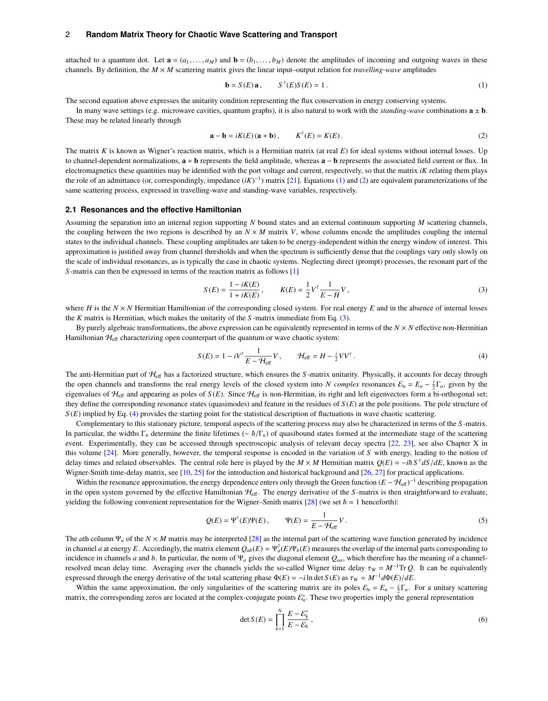
<figcaption class="paper-figure-caption"><b>Fig 1.</b> Low-resolution page preview, page 2</figcaption>
</figure>
<figure class="paper-figure-card">
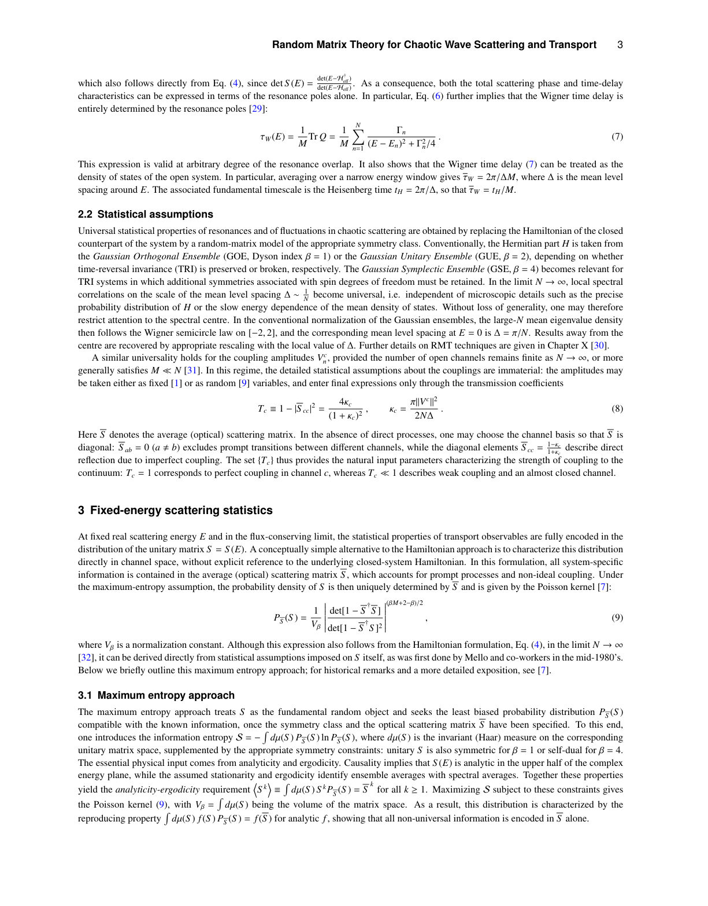
<figcaption class="paper-figure-caption"><b>Fig 2.</b> Low-resolution page preview, page 3</figcaption>
</figure>
<figure class="paper-figure-card">
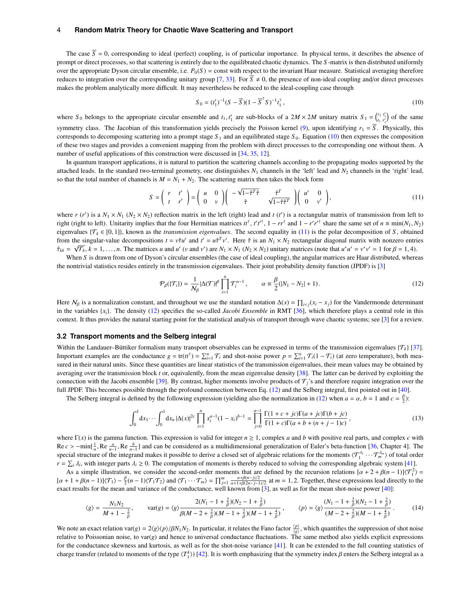
<figcaption class="paper-figure-caption"><b>Fig 3.</b> Low-resolution page preview, page 4</figcaption>
</figure>
<figure class="paper-figure-card">
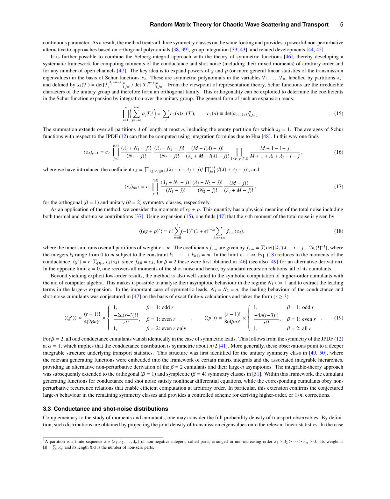
<figcaption class="paper-figure-caption"><b>Fig 4.</b> Low-resolution page preview, page 5</figcaption>
</figure>
<figure class="paper-figure-card">
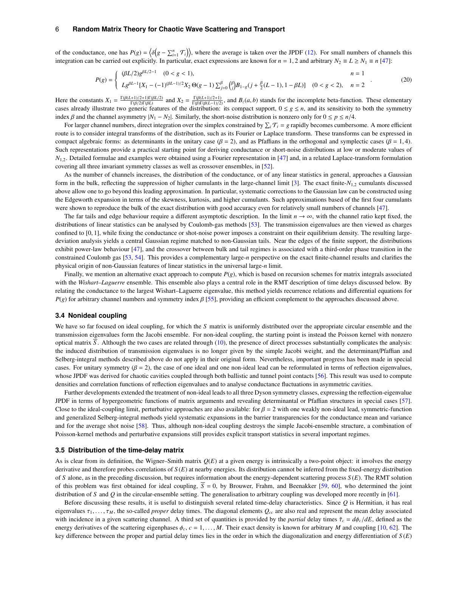
<figcaption class="paper-figure-caption"><b>Fig 5.</b> Low-resolution page preview, page 6</figcaption>
</figure>
</div>

<p><strong>Summary.</strong> This paper reviews the application of Random Matrix Theory to study wave scattering in chaotic, open quantum systems. It develops a theoretical framework showing that complex resonance poles dictate universal statistical measures like the Wigner time delay and transport coefficients. This methodology is crucial for analyzing energy dissipation and coupling effects in mesoscopic conductors.</p>
<p><strong>Why it may be interesting.</strong> This work provides a powerful, universal theoretical toolkit for analyzing open quantum systems where dissipation or coupling to external baths is crucial. The connection between spectral statistics (resonances) and transport properties ($  au_W$, $g$) is fundamental for understanding mesoscopic physics.</p>
<details>
<summary>Detailed structure</summary>
<p><strong>Main problem.</strong> The paper reviews random matrix approaches to characterize chaotic wave scattering and transport in open quantum systems.</p>
<p><strong>Main result.</strong> It establishes that key transport observables like the Wigner time delay are determined solely by the complex resonance poles of the scattering matrix, exhibiting universal statistics governed by system symmetries and openness.</p>
<p><strong>Method.</strong> The analysis employs effective non-Hermitian Hamiltonian formulations and utilizes Random Matrix Theory (RMT) techniques, including maximum entropy methods and Selberg integrals, to calculate statistical moments.</p>
<p><strong>Model / system.</strong> The model is a wave-chaotic system coupled to external leads (open system), described by the scattering matrix S(E). The theoretical framework extends from Hermitian Hamiltonians to non-Hermitian effective Hamiltonians incorporating coupling channels and absorption.</p>
<p><strong>Key observables.</strong> Scattering matrix S(E), Wigner time delay ($   au_W$), resonance poles ($E_n, \Gamma_n$), transmission eigenvalues $\{T_k\}$, conductance ($g$), and shot noise power ($p$).</p>
<p><strong>Important parameters / regimes.</strong> Symmetry index $eta$ (related to Dyson's classes), number of channels $M$, energy $E$, and the coupling strength/loss rate.</p>
<p><strong>Assumptions / limitations.</strong> The analysis relies on the resonance approximation, assuming slow variation of couplings over the scale of individual resonances, and often assumes the large channel limit ($N 	o \infty$) for universality.</p>
<p><strong>Figures summary.</strong> Not specified (based only on notes).</p>
<p><strong>Paper structure.</strong> The paper progresses by introducing the effective Hamiltonian formalism, deriving relationships between scattering observables ($  au_W$, $\Phi(E)$) and resonance poles, then detailing advanced statistical calculations using RMT tools like the Poisson kernel and Selberg integrals to find moments of transport quantities.</p>
</details>
<details>
<summary>Abstract</summary>
<p>We review random matrix approaches to chaotic wave scattering and transport in open systems. Starting from the effective non-Hermitian Hamiltonian formulation, we discuss the scattering matrix, reaction matrix, time delays, and complex resonances as complementary probes of open chaotic dynamics. We emphasize universal statistics governed by symmetry, openness, and channel coupling. Topics include the maximum-entropy description of fixed-energy scattering and its applications to quantum transport, energy correlations, resonance and eigenfunction statistics, and selected wave-chaotic phenomena induced by finite absorption. The focus throughout is on non-perturbative methods and universal structures underlying open quantum and wave chaotic systems.</p>
</details>
<p><sub><a href="#top">↑ back to top</a></sub></p>

<p><a id="paper-2606.10032"></a></p>
<h3 id="collective-drift-and-pinning-in-active-rotator-networks-with-kuramoto-coupling-and-mixed-sign-feedback-disorder"><a href="http://arxiv.org/abs/2606.10032v1">Collective drift and pinning in active rotator networks with Kuramoto coupling and mixed-sign feedback disorder</a></h3>
<p><strong>Authors:</strong> Arpan Dey<br>
<strong>Type:</strong> theory · <strong>Category:</strong> statistical mechanics · <strong>PDF:</strong> <a href="https://arxiv.org/pdf/2606.10032v1">https://arxiv.org/pdf/2606.10032v1</a><br>
<strong>Analysis basis:</strong> full PDF text, analyzed in chunks
<strong>Topic relevance:</strong> <code>driven-dissipative phase transition</code> <strong>3/5</strong> · <code>methods for driven-dissipative</code> <strong>3/5</strong> · <code>non-equilibrium dynamics</code> <strong>3/5</strong> · <code>non-equilibrium universality</code> <strong>2/5</strong> · <code>Frenkel-Kontorova</code> <strong>1/5</strong> · <code>Keldysh / 2PI / non-Gaussian methods</code> <strong>1/5</strong> · <code>correlated / nonlocal dissipation</code> <strong>1/5</strong></p>
<div class="figure-strip-hint">↔ Scroll figures horizontally</div>
<div class="paper-figures-scroll">
<figure class="paper-figure-card">
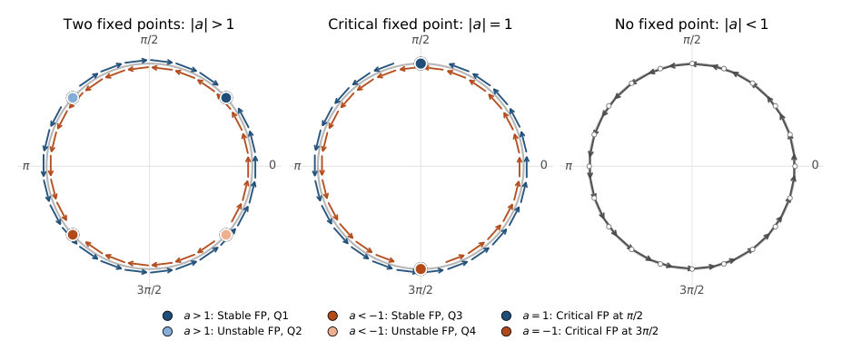
<figcaption class="paper-figure-caption"><b>Fig 1.</b> Figure 1: Phase-circle schematics for the local dynamics ˙θ = ω(1 −a sin θ). The panels show the two-fixed-point regime |a| &gt; 1, the critical case |a| = 1, and the drifting regime |a| &lt; 1. Stable, unstable, and critical fixed points are marked for the corresponding positive and negative values of a.</figcaption>
</figure>
<figure class="paper-figure-card">
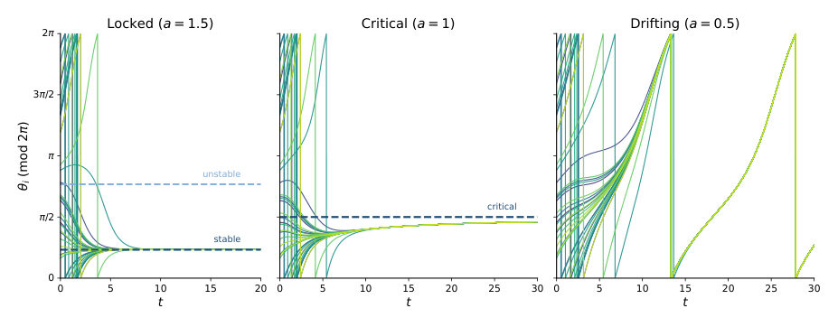
<figcaption class="paper-figure-caption"><b>Fig 2.</b> Figure 2: Wrapped phase trajectories for N = 30 fully connected oscillators. The phases are initialized uniformly at random in [0, 2π) and integrated using the Euler method, with ω = 0.5 and K = 0.6. The three panels show a = 1.5, a = 1, and a = 0.5, corresponding to locked, critical, and drifting regimes.</figcaption>
</figure>
<figure class="paper-figure-card">
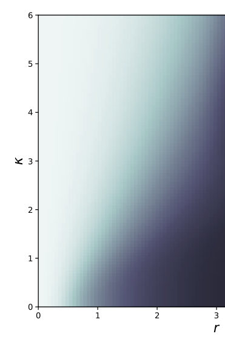
<figcaption class="paper-figure-caption"><b>Fig 3.</b> Figure 3: Heatmap of D(r, κ) = ⟨N −1 P</figcaption>
</figure>
<figure class="paper-figure-card">
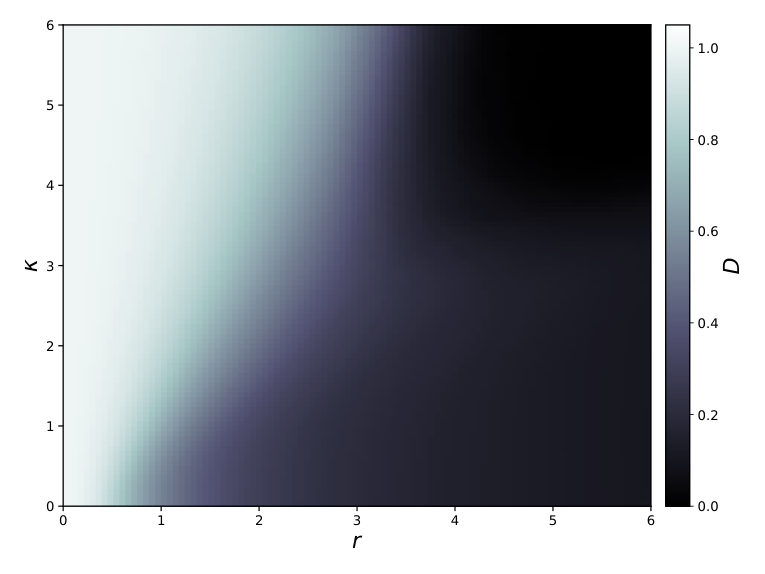
<figcaption class="paper-figure-caption"><b>Fig 4.</b> Fig. 4 shows f+ as the main heatmap and f−as an inset. Since the intrinsic drive is fixed and positive, ω = 0.5, positive drift dominates at low-r and large-κ where the local feedback amplitudes are typically too weak to oppose the common drive. However, the large-r, large-κ</figcaption>
</figure>
<figure class="paper-figure-card">
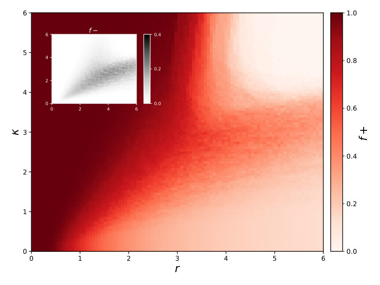
<figcaption class="paper-figure-caption"><b>Fig 5.</b> Figure 4: Positive and negative drifting fractions. Main panel: positive drifting fraction f+. Inset: negative drifting fraction f−. Oscillators are classified using tolerance ϵ = 10−3 applied to late-time velocity Ωi/ω. All other simulation parameters are the same as in Fig. 3.</figcaption>
</figure>
</div>

<p><strong>Summary.</strong> This paper analyzes active rotator networks where oscillators interact via Kuramoto coupling while simultaneously experiencing mixed-sign local feedback disorder. The study maps out the competition between collective phase alignment (drift) and pinning effects across different parameter regimes. It demonstrates that this type of disorder alone can fundamentally alter the system's macroscopic dynamics, providing a rich model for understanding non-equilibrium collective behavior.</p>
<p><strong>Why it may be interesting.</strong> This work provides a detailed study of non-equilibrium collective dynamics in an active matter context. The interplay between disorder (mixed-sign feedback) and coupling strength offers insights into how local interactions can stabilize or destabilize macroscopic coherent states, relevant to understanding complex biological or physical systems far from equilibrium.</p>
<details>
<summary>Detailed structure</summary>
<p><strong>Main problem.</strong> The study investigates the competition between local pinning effects induced by mixed-sign feedback disorder and global phase alignment/drift in active rotator networks.</p>
<p><strong>Main result.</strong> Mixed-sign local feedback alone can significantly reshape the balance between pinning and drifting dynamics, even when the intrinsic drive is homogeneous. Strong coupling can restore drift under certain conditions, while strong disorder generally suppresses it.</p>
<p><strong>Method.</strong> The research employs numerical simulations to construct regime maps in the parameter space defined by feedback disorder strength ($\sigma_A$) and coupling strength ($K$). Analytical limits are used to benchmark these numerical findings.</p>
<p><strong>Model / system.</strong> The model is a fully connected network of active rotators governed by an equation incorporating a common intrinsic drive, Kuramoto-like coupling, and local feedback amplitudes drawn from a zero-mean Gaussian distribution. The dynamics describe collective synchronization and drift in excitable systems.</p>
<p><strong>Key observables.</strong> Mean absolute late-time drift ($D$), and the fractions of oscillators exhibiting positive ($f_+$) or negative ($f_-$) late-time drift.</p>
<p><strong>Important parameters / regimes.</strong> Feedback disorder strength ($r = \sigma_A/\omega$) and coupling strength ($\kappa = K/\omega$). Key regimes include weak vs. strong disorder/coupling, and the presence of intrinsic frequency disorder.</p>
<p><strong>Assumptions / limitations.</strong> The analysis relies on approximations such as the coherent-phase approximation for strong coupling, and comparisons are drawn between systems with fixed positive drive versus those with zero-mean distributed intrinsic frequencies.</p>
<p><strong>Figures summary.</strong> Figures map out regime boundaries in the feedback-disorder–coupling plane showing how drift ($D$) and drifting fractions ($f^+, f^-$) change. Comparisons are made against uncoupled limits ($\kappa=0$) and finite-size effects are analyzed.</p>
<p><strong>Paper structure.</strong> The paper systematically analyzes the model by first examining the uncoupled limit, then mapping out parameter regimes in the coupled system using numerical simulations, and finally contrasting results when intrinsic frequencies are zero-mean versus fixed positive drive.</p>
</details>
<details>
<summary>Abstract</summary>
<p>Active rotator models provide a minimal phase description of excitable and oscillatory systems, and have long been used to study mutual entrainment, synchronization, and collective transitions. Here, we investigate fully connected active rotator networks with Kuramoto coupling, where a common intrinsic drive competes with local feedback amplitudes drawn from a zero-mean Gaussian distribution. This produces a competition between local pinning and collective phase alignment. Using mean absolute late-time drift and the fractions of positive and negative drifting oscillators, we construct numerical regime maps in the feedback-disorder-coupling plane. At weak coupling, increasing the feedback disorder strength suppresses drift, while stronger coupling can restore positive late-time drift when feedback disorder is not too strong. We interpret these regimes using analytical limits for the uncoupled and coherent strong-coupling cases. We also examine finite-size effects and zero-mean distributed intrinsic frequencies. Together, these results show that mixed-sign local feedback alone can reshape the balance between pinning and drifting in coupled active rotator networks, even when the intrinsic drive is homogeneous.</p>
</details>
<p><sub><a href="#top">↑ back to top</a></sub></p>

<p><a id="paper-2606.10054"></a></p>
<h3 id="scaling-law-of-asymptotic-freedom-in-collective-charging-of-quantum-batteries"><a href="http://arxiv.org/abs/2606.10054v1">Scaling law of asymptotic freedom in collective charging of quantum batteries</a></h3>
<p><strong>Authors:</strong> Gentaro Watanabe, Chunlin Chen, B. Prasanna Venkatesh<br>
<strong>Type:</strong> theory · <strong>Category:</strong> other · <strong>PDF:</strong> <a href="https://arxiv.org/pdf/2606.10054v1">https://arxiv.org/pdf/2606.10054v1</a><br>
<strong>Analysis basis:</strong> full PDF text, analyzed in chunks
<strong>Topic relevance:</strong> <code>non-equilibrium universality</code> <strong>3/5</strong> · <code>correlated / nonlocal dissipation</code> <strong>2/5</strong> · <code>driven-dissipative phase transition</code> <strong>2/5</strong> · <code>entanglement &amp; information structure</code> <strong>2/5</strong> · <code>methods for driven-dissipative</code> <strong>2/5</strong> · <code>Keldysh / 2PI / non-Gaussian methods</code> <strong>1/5</strong> · <code>Tavis-Cummings &amp; cavity-many-emitter</code> <strong>1/5</strong> · <code>non-equilibrium dynamics</code> <strong>1/5</strong></p>
<div class="figure-strip-hint">↔ Scroll figures horizontally</div>
<div class="paper-figures-scroll">
<figure class="paper-figure-card">
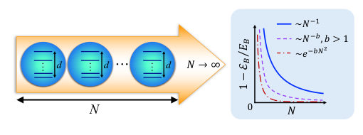
<figcaption class="paper-figure-caption"><b>Fig 1.</b> FIG. 1. Emergence of asymptotic freedom in collective quantum battery charging. Left: an ensemble of N identical d-level batteries with arbitrary spectra. Right: representative scaling of the ergotropy- to-energy ratio EB/EB toward unity with increasing N, including the generic ∼N−1 scaling and accelerated convergence.</figcaption>
</figure>
<figure class="paper-figure-card">
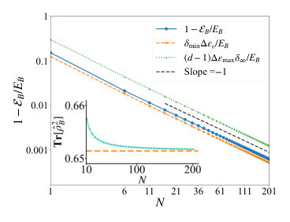
<figcaption class="paper-figure-caption"><b>Fig 2.</b> FIG. 2. Demonstration of 1/N scaling toward asymptotic freedom for 1 −(EB/EB), together with the bounds given by Eqs. (10) and (23), for unitary charging of the d = 3 Dicke model. The inset shows the purity as a function of N. The parameter values are ωC = ωB and g = 20ωB.</figcaption>
</figure>
<figure class="paper-figure-card">
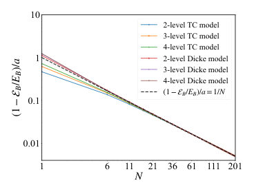
<figcaption class="paper-figure-caption"><b>Fig 3.</b> FIG. 3. Demonstration of the universal 1/N scaling toward asymp- totic freedom. All models considered collapse onto a single line with slope −1 in the log-log plot. The parameter values are the same as Fig. 2.</figcaption>
</figure>
<figure class="paper-figure-card">
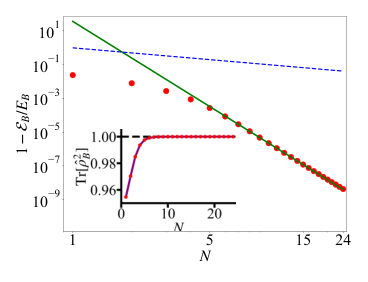
<figcaption class="paper-figure-caption"><b>Fig 4.</b> FIG. 4. Demonstration of fast convergence to asymptotic freedom with power-law scaling ∼1/Nb with b &gt; 1. The green solid line indicates a fit ∼1/N7.2, while the blue dashed line shows the ∼1/N scaling for reference. The inset displays the purity as a function of N. The parameters are set to Ω= ωB = 5 and γ = 1</figcaption>
</figure>
<figure class="paper-figure-card">
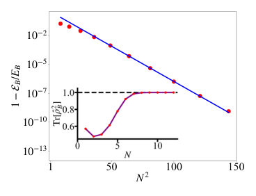
<figcaption class="paper-figure-caption"><b>Fig 5.</b> FIG. 5. Demonstration of fast convergence to asymptotic free- dom with exponential scaling. The blue solid line indicates a fit ∼exp(−bN2) with b = 0.06. The inset displays the purity as a func- tion of N. The parameters are set to Ω= 0, ωB = 10, and γ = 1.</figcaption>
</figure>
</div>

<p><strong>Summary.</strong> This paper rigorously derives universal scaling laws governing how efficiently stored energy can be extracted from a collection of $N$ coupled quantum batteries. It establishes that while generic charging leads to an asymptotic freedom characterized by $\sim 1/N$ decay, specific conditions allow for significantly faster convergence, including exponential scaling. The findings provide crucial theoretical bounds for designing high-efficiency quantum energy devices.</p>
<p><strong>Why it may be interesting.</strong> This work provides fundamental theoretical guarantees regarding energy extraction efficiency in quantum systems, directly impacting the design principles for quantum energy storage devices and understanding collective quantum phenomena.</p>
<details>
<summary>Detailed structure</summary>
<p><strong>Main problem.</strong> The paper establishes a universal scaling law for the collective charging of quantum batteries (QBs) and investigates the phenomenon of 'asymptotic freedom,' where stored energy becomes nearly fully extractable.</p>
<p><strong>Main result.</strong> It proves that the ergotropy-to-energy ratio approaches unity, exhibiting generic asymptotic freedom with at least $\sim N^{-1}$ scaling, but can achieve much faster convergence ($\sim N^{-b}, b>1$ or exponential) if the battery state becomes asymptotically pure.</p>
<p><strong>Method.</strong> The analysis involves deriving rigorous finite-$N$ upper and lower bounds on the ergotropy-to-energy ratio by analyzing the residual population $\delta(N)$ within the framework of collective charging dynamics.</p>
<p><strong>Model / system.</strong> The system consists of $N$ identical, non-interacting quantum batteries (QBs), modeled as qudits. The dynamics are studied using concepts related to total energy ($E_B$) and ergotropy ($    ext{Erg}$), often involving the GKLS master equation for open charging.</p>
<p><strong>Key observables.</strong> Total Energy ($E_B$), Ergotropy ($   ext{Erg}$), Figure of Merit ($ ext{Erg}/E_B$), Residual Population ($\delta(N)$).</p>
<p><strong>Important parameters / regimes.</strong> Number of batteries ($N$), dimension of the qudits ($d$), and the asymptotic behavior of the residual population ($\delta_\infty$).</p>
<p><strong>Assumptions / limitations.</strong> The analysis assumes identical, non-interacting QBs and often requires assumptions about the battery state remaining mixed or approaching purity in specific limits.</p>
<p><strong>Figures summary.</strong> Figures illustrate the concept of asymptotic freedom showing generic $\sim N^{-1}$ scaling, alongside examples demonstrating faster convergence rates such as power-law ($\sim 1/N^b$) and exponential ($\sim e^{-bN^2}$) scaling for different charging regimes.</p>
<p><strong>Paper structure.</strong> The paper develops by first establishing the general $1/N$ universal scaling law (Theorem 1) based on residual population bounds. It then analyzes specific cases, distinguishing between scenarios where the asymptotic residual population is zero or non-zero, leading to derivations of faster convergence rates in those special limits.</p>
</details>
<details>
<summary>Abstract</summary>
<p>We establish a universal scaling law for collective charging of quantum batteries, independent of microscopic details. We prove that the ergotropy-to-energy ratio approaches unity at least as fast as $\sim N^{-1}$ with the number of batteries $N$, implying generic asymptotic freedom. We further show how the universal $1/N$ scaling can be overcome: when the battery state becomes asymptotically pure, the convergence can be substantially faster, including $\sim N^{-b}$ with $b>1$ and even exponential scaling in $N^2$. Rigorous finite-$N$ upper and lower bounds on the ergotropy-to-energy ratio are further derived, providing nonasymptotic guarantees for the universal $1/N$ scaling.</p>
</details>
<p><sub><a href="#top">↑ back to top</a></sub></p>

<p><a id="paper-2606.10004"></a></p>
<h3 id="wave-packets-from-the-spectrum"><a href="http://arxiv.org/abs/2606.10004v1">Wave packets from the spectrum</a></h3>
<p><strong>Authors:</strong> ChunJun Cao, Oliver Friedrich, Marin Girard, Nicolas Loizeau, Ashmeet Singh<br>
<strong>Type:</strong> theory · <strong>Category:</strong> other · <strong>PDF:</strong> <a href="https://arxiv.org/pdf/2606.10004v1">https://arxiv.org/pdf/2606.10004v1</a><br>
<strong>Analysis basis:</strong> full PDF text, analyzed in chunks
<strong>Topic relevance:</strong> <code>non-equilibrium dynamics</code> <strong>3/5</strong> · <code>analog quantum simulation</code> <strong>2/5</strong> · <code>driven-dissipative phase transition</code> <strong>2/5</strong> · <code>non-equilibrium universality</code> <strong>2/5</strong> · <code>Frenkel-Kontorova</code> <strong>1/5</strong> · <code>Keldysh / 2PI / non-Gaussian methods</code> <strong>1/5</strong> · <code>correlated / nonlocal dissipation</code> <strong>1/5</strong> · <code>entanglement &amp; information structure</code> <strong>1/5</strong> · <code>methods for driven-dissipative</code> <strong>1/5</strong></p>
<div class="figure-strip-hint">↔ Scroll figures horizontally</div>
<div class="paper-figures-scroll">
<figure class="paper-figure-card">
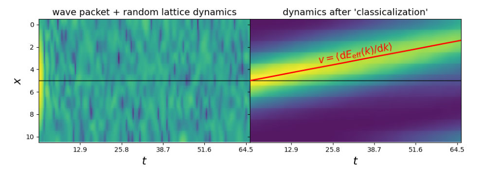
<figcaption class="paper-figure-caption"><b>Fig 1.</b> Figure 1: Demonstrating our procedure for (re-)interpreting a given Hamiltonian ˆH as a lattice theory with local interaction structure. Left panel: evolution of an initially Gaussian wave packet wrt. random lattice dynamics, i.e. when choosing the coefficients hℓin Equation 3 at random. Right panel: switching from the initial set of lattice operators ˆa† i , ˆai to a new set ˆb† i , ˆbi via the algorithm developed in this paper. Wrt. the new lattice, states can stay localized for some time &amp; propagate according to an effective dispersion relation. We considered a Hilbert space of dimension 211 (corresponding to 11 qubits) for this figure - see Sections 1 and 2 for details.</figcaption>
</figure>
<figure class="paper-figure-card">
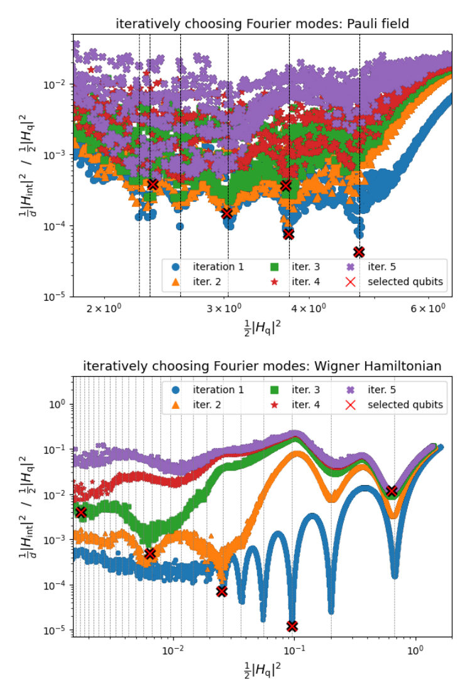
<figcaption class="paper-figure-caption"><b>Fig 2.</b> Figure 2: Visualizing our iterative procedure for factorizing a given Hilbert space into minimum-interaction qubits. At each iteration we consider the Hamiltonian ˆHrest,i that was left from the previous factorization as the new total Hamiltonian. We then sift through different norms | ˆHq,i+1| ∼Eq,i+1 of the qubit self-Hamiltonian and find candidates for the rest-Hamiltonian ˆHrest,i+1 such that interaction between next qubit and next rest is minimized. Among all of these candidates we then pick the qubit and rest that achieve the lowest ratio | ˆHint,i+1| / | ˆHq,i+1| . These selected factorizations are indicated by the red crosses in the figure. The upper panel displays this procedure...</figcaption>
</figure>
<figure class="paper-figure-card">
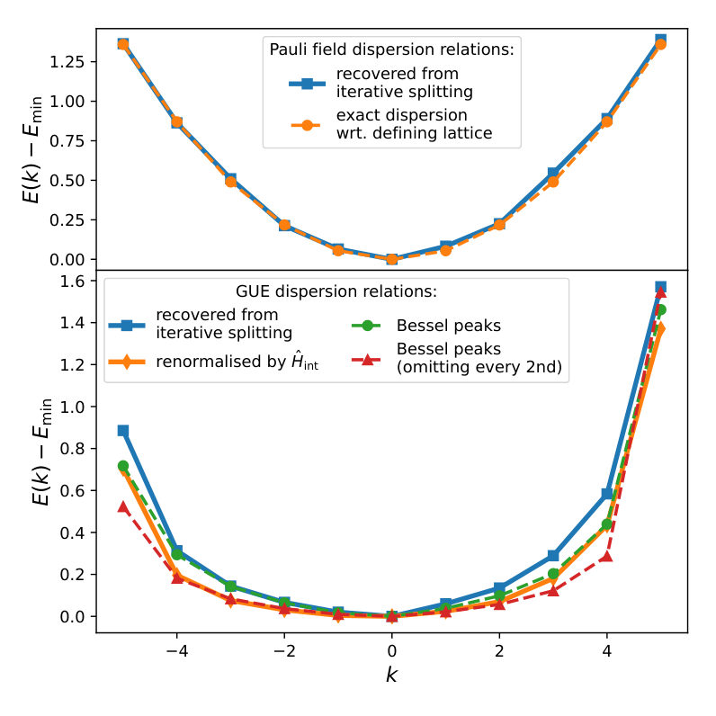
<figcaption class="paper-figure-caption"><b>Fig 3.</b> Figure 3: The dispersion relations we obtain when iteratively decomposing either the Pauli field Hamiltonian or a GUE Hamiltonian into a lattice of weakly interacting spins (&quot;Fourier modes&quot;). See main text for details.</figcaption>
</figure>
<figure class="paper-figure-card">
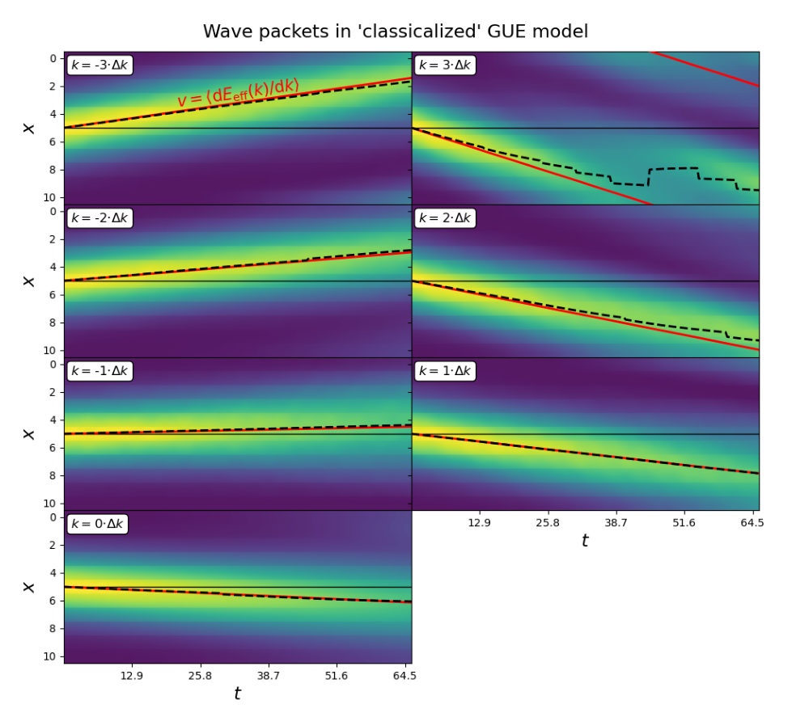
<figcaption class="paper-figure-caption"><b>Fig 4.</b> Figure 4: Starting from a Gaussian random Hamiltonian in a d = 211 dimensional Hilbert space we identify field operators ˆa† x wrt. which stable, propagating wave packets can be defined. Different panels show how the density |ψ(x, t)|2 evolves for wave packets of different average momenta k. Red solid lines indicate expected propagation speed from an effective dispersion relation, while black dashed lines indicate the actual center of the wave packets. Note that the packet in the upper most, right panel is dispersing quickly, because around its average momentum the dispersion relation is strongly curved. Because of the periodicity of our (small) grid, this leads to the interference pattern...</figcaption>
</figure>
<figure class="paper-figure-card">
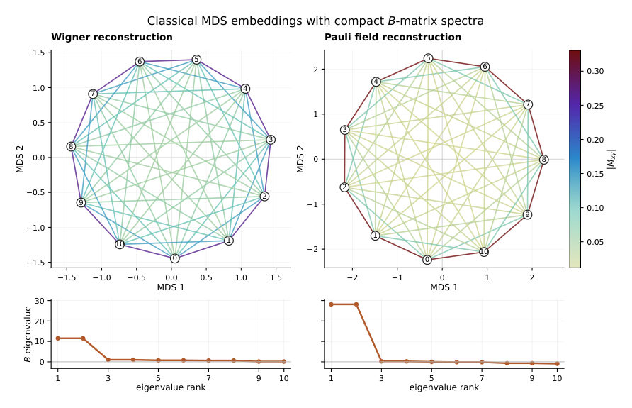
<figcaption class="paper-figure-caption"><b>Fig 5.</b> Figure 5: Classical MDS embeddings with compact B-matrix spectra: The top left panel shows the embedding of the spatial Fermionic degrees-of-freedom emerging from a Wigner Hamiltonian in a two-dimensional cartesian space via MDS. The top right panel shows the corresponding embedding for a Pauli field Hamiltonian. We overlay graph edges between embedded Fermionic degrees-of-freedom, with edge color indicating hopping term strength. Embedding coordinates MDS 1 and MDS 2 emerge as the dominant Cartesian dimensions of the embedding, as is implied by the bottom panels. These panels show the ordered spectrum of the B matrix for Wigner (left) and Pauli field reconstruction (right). In classical...</figcaption>
</figure>
</div>

<p><strong>Summary.</strong> The paper introduces 'quantum mereology' to decompose complex Hamiltonians into weakly interacting factors that resemble localized lattice theories. By minimizing interaction terms across these factorizations, the authors successfully map dynamics from random matrix models onto propagating wave packets. This provides a systematic theoretical pathway for extracting emergent, quasi-integrable degrees-of-freedom from highly complicated quantum systems.</p>
<p><strong>Why it may be interesting.</strong> This work provides a powerful mathematical tool for understanding how complex, non-local quantum dynamics can be systematically reduced or reinterpreted as simple, local physics governed by emergent lattice modes, which is highly relevant for characterizing many-body systems in condensed matter theory.</p>
<details>
<summary>Detailed structure</summary>
<p><strong>Main problem.</strong> The core problem is developing a formal framework, termed 'quantum mereology,' to decompose an arbitrary quantum Hamiltonian into weakly interacting factors that mimic local lattice dynamics.</p>
<p><strong>Main result.</strong> The authors show that by minimizing interaction terms in factorizations, one can successfully re-interpret the dynamics of highly non-local random matrix models (like GUE) as wave packet propagation on an emergent 1D lattice structure.</p>
<p><strong>Method.</strong> The methodology involves iterative Hamiltonian factorization ($\hat{H} \simeq \hat{H}_q \otimes \hat{H}_r$) by minimizing a loss function related to the interaction term, followed by mapping the resulting quasi-integrable model onto fermionic operators via Jordan-Wigner transformation.</p>
<p><strong>Model / system.</strong> The study applies to general quantum systems described by Hamiltonians ($\hat{H}$), including random matrix models (GUE) and continuum field theories like the Pauli field Hamiltonian. The focus is on finding emergent, localized degrees-of-freedom (DOFs).</p>
<p><strong>Key observables.</strong> Wave packet evolution $|\langle i|\psi
angle|^2$, effective dispersion relation $E_{	ext{eff}}(k)$, and the minimization of the interaction strength $   ext{Tr}(\hat{H}_{   ext{int}}^2)$.</p>
<p><strong>Important parameters / regimes.</strong> The dimension $d$ of the Hilbert space, the coupling constants ($h_\ell$), and the excitation energy ($  ext{Eq}$) derived from spectral analysis.</p>
<p><strong>Assumptions / limitations.</strong> Key assumptions include approximating mutual information by $rac{1}{2d} ext{Tr}(\hat{H}_{   ext{int}}^2)$ and assuming that the optimal factorization can be found via local minimization of this loss function, which may fail for overlapping DOFs.</p>
<p><strong>Figures summary.</strong> Figures illustrate wave packet evolution comparing non-local vs. localized dynamics; they also show spectral density plots confirming minimum interaction points (Bessel peaks) and MDS embeddings suggesting emergent 1D circular geometry.</p>
<p><strong>Paper structure.</strong> The paper progresses from demonstrating the transformation of random matrices to local theories, developing the iterative factorization algorithm based on minimizing interaction loss, deriving theoretical constraints using asymptotic eigenvalue densities (GUE/Wishart), and finally applying this framework to known integrable models like the Pauli field.</p>
</details>
<details>
<summary>Abstract</summary>
<p>The freedom to change Fock basis seems to ensure a minimum amount of locality in lattice theories in the following sense: If $\lbrace (\hat a_i^\dagger\,,\,\hat a_i)\rbrace$ for $i=1,\dots,n$ is a lattice of creation and annihilation operators and if a given Hamiltonian $\hat H$ induces highly non-local dynamics on that lattice, then it will usually be possible to change to a new set of operators $\lbrace (\hat b_i^\dagger\,,\,\hat b_i)\rbrace$ in terms of which the dynamics appear less non-local. We demonstrate this by turning a highly non-local random matrix model into a local, 1D lattice theory where particles can propagate in localized wave packets. More generally, we show that any Hamiltonian can be made to look like such a theory, with the lattice dispersion relation and the non-integrability of the theory depending on the spectrum of $\hat H$. We argue that our results are a step towards quantum mereology for fields.</p>
</details>
<p><sub><a href="#top">↑ back to top</a></sub></p>

<p><a id="paper-2606.10498"></a></p>
<h3 id="microscopic-evidence-for-a-zhang-rice-triplet-state-in-the-van-der-waals-antiferromagnet-nipsmath448math"><a href="http://arxiv.org/abs/2606.10498v1">Microscopic evidence for a Zhang-Rice triplet state in the van der Waals antiferromagnet, NiPS$_3$</a></h3>
<p><strong>Authors:</strong> Beom Hyun Kim, Youjin Lee, Junik Hwang, Junghyun Kim, Je-Geun Park, Seung-Ho Baek<br>
<strong>Type:</strong> experiment · <strong>Category:</strong> strongly correlated electrons · <strong>PDF:</strong> <a href="https://arxiv.org/pdf/2606.10498v1">https://arxiv.org/pdf/2606.10498v1</a><br>
<strong>Analysis basis:</strong> full PDF text, analyzed in chunks
<strong>Topic relevance:</strong> <code>exotic spin models in light-matter</code> <strong>3/5</strong> · <code>spintronics-quantum-optics interface</code> <strong>3/5</strong> · <code>analog quantum simulation</code> <strong>2/5</strong> · <code>driven-dissipative phase transition</code> <strong>2/5</strong> · <code>Kondo &amp; dissipative impurity</code> <strong>1/5</strong> · <code>methods for driven-dissipative</code> <strong>1/5</strong> · <code>non-equilibrium dynamics</code> <strong>1/5</strong></p>
<div class="figure-strip-hint">↔ Scroll figures horizontally</div>
<div class="paper-figures-scroll">
<figure class="paper-figure-card">
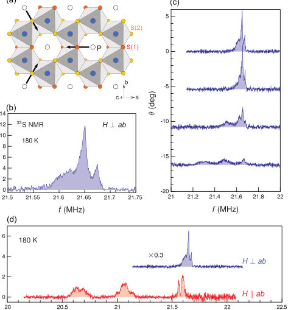
<figcaption class="paper-figure-caption"><b>Fig 1.</b> FIG. 1. (a) Crystal structure of NiPS3 viewed along the c∗</figcaption>
</figure>
<figure class="paper-figure-card">
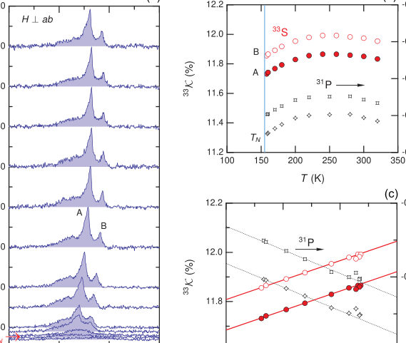
<figcaption class="paper-figure-caption"><b>Fig 2.</b> FIG. 2. (a) Temperature dependence of the 33S NMR spectrum in the PM phase for H ⊥ab. The overall spectral shape remains unchanged across the temperature range, with two well-resolved peaks (labelled A and B) persisting up to room temperature. (b) 33S Knight shift 33K of the A and B peaks as a function of temperature. The temperature dependence of both 33K and 31P Knight shift 31K (right axis) closely follows that of the bulk spin susceptibility, indicating that both nuclei probe the identical local spin susceptibility. Note that the two lines for 31P arise from nuclear dipole-dipole interactions, so called Pake doublet [20]. (c) Knight shift versus susceptibility (K-χ) plots with...</figcaption>
</figure>
<figure class="paper-figure-card">
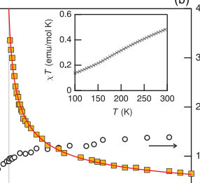
<figcaption class="paper-figure-caption"><b>Fig 3.</b> FIG. 3. (a) Nuclear spin-lattice relaxation rate T −1 1 of 33S and 31P as a function of temperature. Upon cooling, while 31T −1 1 monotonically decreases, 33T −1 1 exhibits a progressive enhancement. (b) Temperature dependence of the reduced relaxation rate, R1 ≡(T1χT )−1. While the nearly constant 31R1 supports the absence of collective spin fluctuations, 33R1 exhibits a power-law divergence, which is well-fitted by Eq. (1) throughout the entire temperature range (solid line). This divergence demonstrates the development of collective charge fluctuations towards an incipient nematic ordering instability (see text). Inset : Temperature dependence of χT for H ⊥ab.</figcaption>
</figure>
</div>

<p><strong>Summary.</strong> This experimental study uses $^{33}$S NMR on NiPS3 to probe its electronic structure, arguing that the material hosts a spin-charge-intertwined Zhang-Rice triplet state. By analyzing Knight shifts and observing a power-law divergence in the relaxation rate near the Néel temperature, the authors provide evidence for nematic charge fluctuations driving the magnetic ordering.</p>
<p><strong>Why it may be interesting.</strong> The work connects advanced spectroscopic techniques (NMR) directly to fundamental concepts in strongly correlated materials theory, specifically identifying signatures of emergent quantum states like the Zhang-Rice triplet and coupling them to magnetic phase transitions via critical dynamics.</p>
<details>
<summary>Detailed structure</summary>
<p><strong>Main problem.</strong> The study aims to provide microscopic evidence for a Zhang-Rice triplet state in the van der Waals antiferromagnet NiPS3 and understand the origin of its magnetic exciton coherence.</p>
<p><strong>Main result.</strong> NMR measurements reveal strong hybridization between S 3p and Ni 3d orbitals, supporting a spin-charge-intertwined ground state. Furthermore, critical slowing down observed via $^{33}$S relaxation suggests nematic correlations drive the magnetic transition.</p>
<p><strong>Method.</strong> The research employed solid-state Nuclear Magnetic Resonance (NMR) spectroscopy on enriched single crystals of NiPS3, measuring Knight shifts and nuclear spin-lattice relaxation rates ($T_1^{-1}$).</p>
<p><strong>Model / system.</strong> The physical system is NiPS3, a van der Waals antiferromagnet. The theoretical framework involves modeling the ground state as a Zhang-Rice triplet (ZRT) state arising from strong hybridization between ligand holes (S 3p) and transition metal moments (Ni 3d).</p>
<p><strong>Key observables.</strong> Temperature dependence of $^{33}$S and $^{31}$P Knight shifts, power-law divergence of the $^{33}$S nuclear spin-lattice relaxation rate ($T_1^{-1}$), and the local Electric Field Gradient (EFG) tensor components.</p>
<p><strong>Important parameters / regimes.</strong> Néel temperature $T_N = 155$ K; Quadrupole frequency $
u_Q = 6.4   ext{ MHz}$; Critical exponent related to power-law divergence ($\propto |T - T_0|^{-0.464}$).</p>
<p><strong>Assumptions / limitations.</strong> The analysis assumes that the observed NMR signals are sensitive probes of local spin and charge fluctuations, allowing for the differentiation between different types of magnetic correlations (e.g., nematic vs. simple AFM).</p>
<p><strong>Figures summary.</strong> Figures illustrate the crystal structure details related to the EFG tensor components and show the temperature dependence of various spectroscopic measurements, such as Knight shifts and relaxation rates.</p>
<p><strong>Paper structure.</strong> The paper progresses by first establishing the material's magnetic properties (AFM ordering), then using NMR spectroscopy on $^{33}$S and $^{31}$P to probe local spin susceptibility via Knight shifts. Finally, it analyzes the temperature dependence of $T_1^{-1}$ to pinpoint critical charge fluctuations associated with nematic correlations.</p>
</details>
<details>
<summary>Abstract</summary>
<p>Quantum-entangled states underpin many emergent phenomena in quantum materials, yet their direct experimental identification remains a challenge. NiPS$_3$, a van der Waals antiferromagnet exhibiting a resolution-limited magnetic exciton in its ordered phase, has been proposed to host a many-body entangled Zhang-Rice triplet state. Here, using $^{33}$S nuclear magnetic resonance (NMR) on $^{33}$S-enriched NiPS$_3$ single crystals, we provide microscopic evidence for this charge-transfer state. The $^{33}$S and $^{31}$P Knight shifts as a function of temperature reveal a unified spin-triplet configuration arising from strong hybridization between a self-doped hole in the S $3p$ orbitals and a hole in Ni $3d$ orbitals. Furthermore, the $^{33}$S nuclear spin-lattice relaxation rate exhibits a power-law divergence as it approaches the Néel temperature $T_N=155$ K, indicating critical slowing down of collective charge fluctuations consistent with spin-nematic correlations. These results reveal a spin-charge-intertwined ground state and establish the microscopic foundation for the exceptional coherence of the magnetic exciton in NiPS$_3$.</p>
</details>
<p><sub><a href="#top">↑ back to top</a></sub></p>

<p><a id="paper-2606.10128"></a></p>
<h3 id="determining-universal-spectra-from-probability-distributions"><a href="http://arxiv.org/abs/2606.10128v1">Determining universal spectra from probability distributions</a></h3>
<p><strong>Authors:</strong> Charles Kacir, Joseph Moscoso, Amy Nicholson, Thomas R. Richardson, Cade Rodgers<br>
<strong>Type:</strong> theory · <strong>Category:</strong> quantum gases · <strong>PDF:</strong> <a href="https://arxiv.org/pdf/2606.10128v1">https://arxiv.org/pdf/2606.10128v1</a><br>
<strong>Analysis basis:</strong> full PDF text, analyzed in chunks
<strong>Topic relevance:</strong> <code>Keldysh / 2PI / non-Gaussian methods</code> <strong>3/5</strong> · <code>driven-dissipative phase transition</code> <strong>2/5</strong> · <code>non-equilibrium universality</code> <strong>2/5</strong> · <code>Kondo &amp; dissipative impurity</code> <strong>1/5</strong> · <code>analog quantum simulation</code> <strong>1/5</strong> · <code>entanglement &amp; information structure</code> <strong>1/5</strong> · <code>methods for driven-dissipative</code> <strong>1/5</strong> · <code>non-equilibrium dynamics</code> <strong>1/5</strong></p>
<div class="figure-strip-hint">↔ Scroll figures horizontally</div>
<div class="paper-figures-scroll">
<figure class="paper-figure-card">
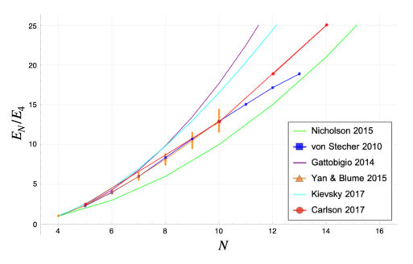
<figcaption class="paper-figure-caption"><b>Fig 1.</b> FIG. 1. Energy of a universal N-body cluster, EN, relative to the 4-body energy, E4, as a function of N. Results assuming a log-normal distribution for the N = 2 correlator are shown in green. Data and other analytic predictions are taken from: von Stecher 2010 [12], Gattobigio 2014 [13], Yan &amp; Blume 2015 [14], Kievsky 2017 [15], Carlson 2017 [16].</figcaption>
</figure>
<figure class="paper-figure-card">
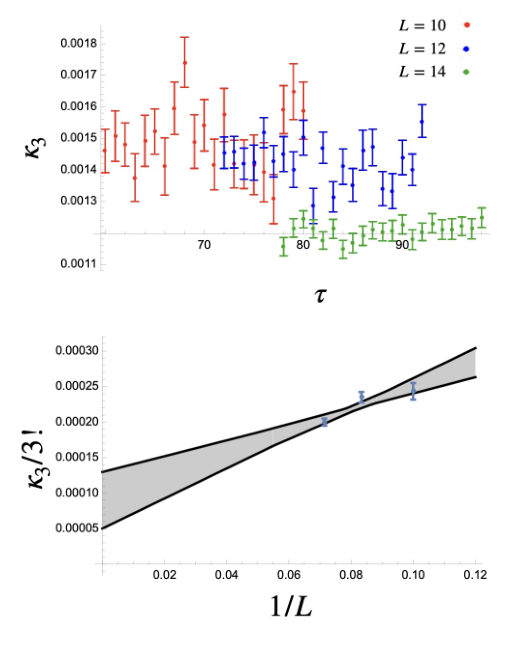
<figcaption class="paper-figure-caption"><b>Fig 2.</b> FIG. 2. Contributions to the third cumulant, κ3, of ln (M[ϕ, τ])2, as a function of τ (top) and 1/L (bottom). The band on the lower figure corresponds to a linear extrapolation in 1/L.</figcaption>
</figure>
<figure class="paper-figure-card">
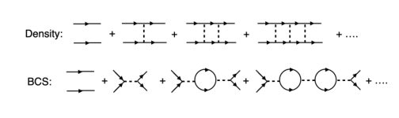
<figcaption class="paper-figure-caption"><b>Fig 3.</b> FIG. 3. Graphs contributing to the two-particle correla- tion function, Eq. 3.8. Fermionic propagators are denoted by solid lines with arrows following the progression of time, while bosonic auxiliary field contributions are dashed.</figcaption>
</figure>
</div>

<p><strong>Summary.</strong> The paper develops methods to extract universal spectral information about strongly interacting quantum matter by analyzing the probability distributions of two-particle correlation functions. It combines numerical lattice techniques with analytic large-$N$ expansions, showing that ratios of cluster energies provide scale-independent predictions. This methodology is crucial for understanding physics in regimes like unitarity where simple perturbative approaches fail.</p>
<p><strong>Why it may be interesting.</strong> This work is highly relevant as it tackles the difficult problem of extracting fundamental, scale-invariant physics from complex many-body correlators in strongly interacting systems, a core challenge in modern quantum field theory and AMO research involving ultracold atomic gases near Feshbach resonances.</p>
<details>
<summary>Detailed structure</summary>
<p><strong>Main problem.</strong> The central goal is determining universal spectral information about interacting quantum systems by analyzing probability distributions derived from two-particle correlation functions.</p>
<p><strong>Main result.</strong> The raw moments of the distribution are shown to be equivalent to the energies of $n$-body clusters, suggesting that ratios of these energies can yield cutoff-independent predictions for universal physics.</p>
<p><strong>Method.</strong> The authors employ both numerical lattice computations and analytic expansions in the large-$N$ limit, utilizing cumulant expansions ($\kappa_n$) of the logarithm of correlation functions to extract spectral information.</p>
<p><strong>Model / system.</strong> The study concerns strongly-interacting quantum matter fields (fermions $\psi$) interacting via bosonic auxiliary fields ($\phi$), relevant to theories like QCD and low-energy EFTs. The analysis focuses on two-fermion correlation functions $C_2(	au)$ in the context of non-relativistic, two-component fermions.</p>
<p><strong>Key observables.</strong> Two-particle correlation function ($C_2(	au)$), cumulants ($\kappa_n$), and ratios of cluster energies ($E_{2n}/E_4$).</p>
<p><strong>Important parameters / regimes.</strong> Large Euclidean time ($ au  o \infty$), the limit of large number of species ($N    o \infty$), and parameters related to unitarity.</p>
<p><strong>Assumptions / limitations.</strong> The analysis often assumes that the distribution approaches a log-normal form, which simplifies the extraction of spectral information from moments. A key assumption is that universal physics can be extracted by removing non-universal cutoff effects via ratios.</p>
<p><strong>Figures summary.</strong> Figure 1 compares direct calculations of $n$-body energies against log-normal predictions for the $N=2$ correlator; Figure 2 shows cumulants plateauing, suggesting convergence to a stable spectral regime; Figure 3 illustrates differences in correlation function derivations between BCS and density channels.</p>
<p><strong>Paper structure.</strong> The paper progresses by first establishing the link between moments and cluster energies. It then develops two complementary theoretical frameworks—a lattice approach and an analytic large-$N$ expansion (comparing 'density' vs. 'BCS' channels)—to calculate correlation functions, ultimately deriving conditions for universal spectral determination.</p>
</details>
<details>
<summary>Abstract</summary>
<p>The probability distribution of a two-particle correlation function computed over background auxiliary field configurations, used to generate the interactions, has been shown to inform about the spectra of universal $n$-body clusters [1]. Here, we utilize two approaches, a numerical lattice computation and an analytic expansion in the limit of large numbers of identical species, in an attempt to refine the initial predictions. Exploratory calculations in these directions are presented, and future investigations laid out.</p>
</details>
<p><sub><a href="#top">↑ back to top</a></sub></p>

<p><a id="paper-2606.10452"></a></p>
<h3 id="floquet-analysis-of-coherence-in-periodically-driven-diamond-nv-ensemble-systems"><a href="http://arxiv.org/abs/2606.10452v1">Floquet analysis of coherence in periodically driven diamond NV ensemble systems</a></h3>
<p><strong>Authors:</strong> Cuong M. Nguyen, Uijin Ko, Seong-Joo Lee, Hyeonsu Kim, Hosung Seo, Sangwon Oh<br>
<strong>Type:</strong> both · <strong>Category:</strong> other · <strong>PDF:</strong> <a href="https://arxiv.org/pdf/2606.10452v1">https://arxiv.org/pdf/2606.10452v1</a><br>
<strong>Analysis basis:</strong> full PDF text, analyzed in chunks
<strong>Topic relevance:</strong> <code>methods for driven-dissipative</code> <strong>3/5</strong> · <code>spintronics-quantum-optics interface</code> <strong>3/5</strong> · <code>non-equilibrium dynamics</code> <strong>2/5</strong> · <code>QC/QI experiment</code> <strong>1/5</strong> · <code>driven-dissipative phase transition</code> <strong>1/5</strong> · <code>exotic spin models in light-matter</code> <strong>1/5</strong> · <code>non-equilibrium universality</code> <strong>1/5</strong></p>
<div class="figure-strip-hint">↔ Scroll figures horizontally</div>
<div class="paper-figures-scroll">
<figure class="paper-figure-card">
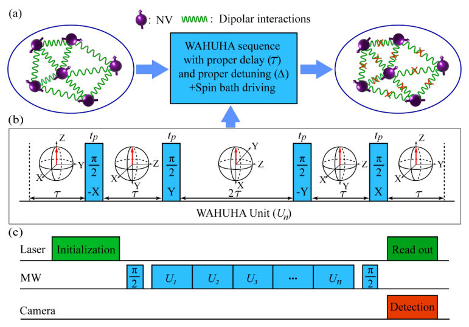
<figcaption class="paper-figure-caption"><b>Fig 1.</b> Figure 1 WAHUHA control and stroboscopic measurement protocol in a dense NV ensemble. (a) Conceptual schematic of a dipolar-coupled NV ensemble under periodic WAHUHA control. The sequence symmetrizes the homonuclear dipolar interaction, while in the experimentally relevant finite-pulse regime the observed response is more naturally described in terms of the one-cycle Floquet unitary. (b) Pulse timing and phase configuration of a single WAHUHA unit, consisting of four π/2 microwave pulses with phases -X, Y, -Y, and X, separated by delays t, t, 2t, t, and t. Therefore, one-cycle duration becomes 𝑇 = 6𝜏+ 4𝑡!. The Bloch-sphere sketches illustrate the cyclic trajectory of the eQective spin under...</figcaption>
</figure>
<figure class="paper-figure-card">
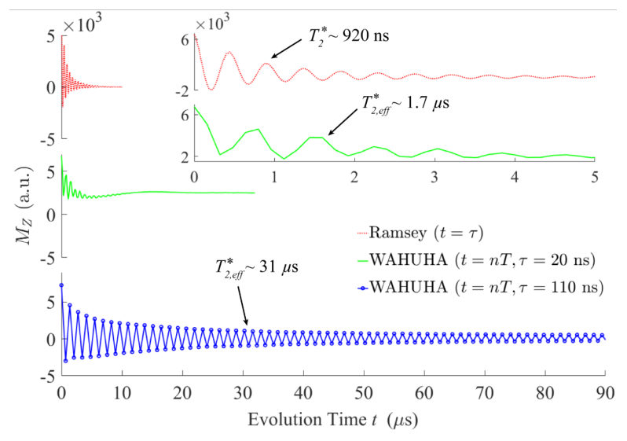
<figcaption class="paper-figure-caption"><b>Fig 2.</b> Figure 2 E;ective inhomogeneous dephasing under WAHUHA. The longitudinal magnetization Mz is measured as a function of evolution time for Ramsey and WAHUHA protocols. The Ramsey free-induction signal yields an intrinsic inhomogeneous dephasing time 𝑇&quot;</figcaption>
</figure>
<figure class="paper-figure-card">
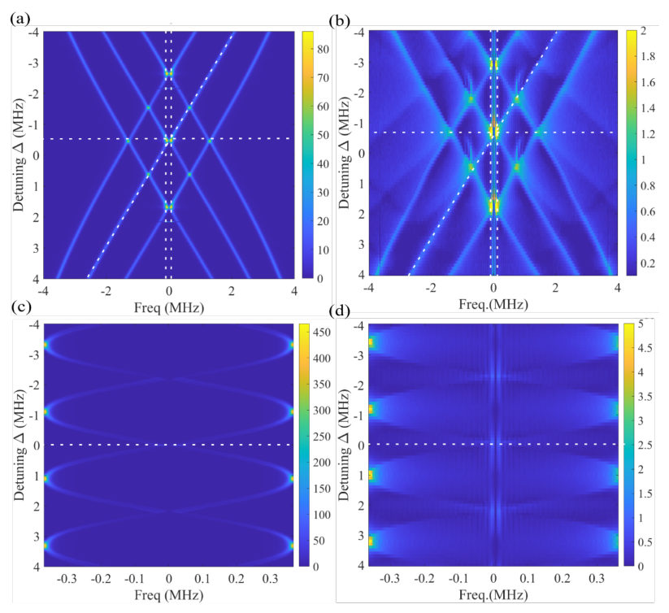
<figcaption class="paper-figure-caption"><b>Fig 3.</b> Figure 3 Detuning-resolved stroboscopic spectra under the WAHUHA sequence. The spectra are obtained by Fourier transforming the measured stroboscopic magnetization,𝑀&#x27; (nT) with respect to the Floquet cycle number n, where the WAHUHA cycle period is defined as 𝑇 = 6𝜏+ 4𝑡! with a pulse duration of 𝑡! = 10 ns (equivalent to ΩRabi = 25 MHz). (a, b) Simulated and experimental spectra for a short interpulse delay of of τ = 12 ns. In this regime, the dominant spectral branches are nearly linear in detuning and follow the expected short-delay scaling, 𝑓! ≈∆/√3. The white dashed lines explicitly indicate the primary Floquet branch and the horizontal zero-detuning axis (∆= 0 ). (c, d) Simulated and...</figcaption>
</figure>
<figure class="paper-figure-card">
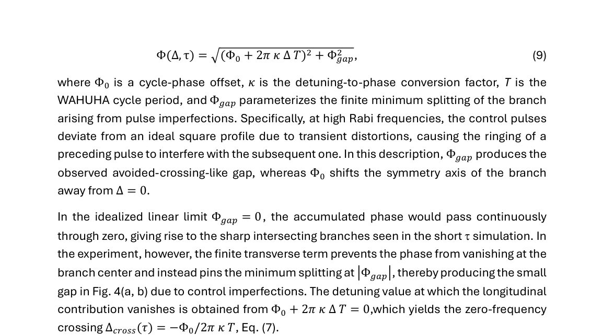
<figcaption class="paper-figure-caption"><b>Fig 4.</b> Fig. 4 (c) shows that this simple scaling captures the dominant trend of data. At short interpulse delays, the small cycle period T makes ∆E?;)) sensitive to the cycle-phase intercept, resulting in a pronounced shift away from zero detuning. As 𝜏 increases, the same phase intercept produces a smaller detuning o]set, and ∆E?;)) to approaches zero. The gap and the detuning-axis o]set provide an experimental signature of finite pulse Floquet structure in the short-delay regime.</figcaption>
</figure>
<figure class="paper-figure-card">
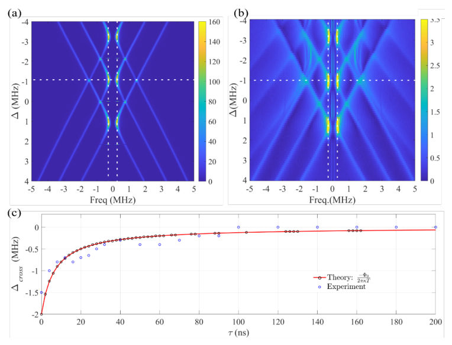
<figcaption class="paper-figure-caption"><b>Fig 5.</b> Figure 4 Short-delay Floquet branch structure and zero-frequency crossing. (a) Simulated and (b) experimental FFT spectra of the 𝑀&#x27; under the WAHUHA sequence for a short interpulse delay of τ = 4 ns. The spectra display the detuning dependent Floquet branch as a function of microwave oQ-resonance detuning (Δ). Dashed lines indicate the zero-detuning axis and the central branch region, highlighting the finite gap and the shifted branch center. (c) Detuning value (∆()*++) at which the dominant branch crosses zero frequency (f = 0), plotted as a function of τ. Experimental data (blue circles) are compared with the analytical prediction (red line, −𝛷,/2𝜋𝜅𝑇) and numerical values extracted from...</figcaption>
</figure>
</div>

<p><strong>Summary.</strong> The research investigates how periodic driving sequences affect quantum coherence in NV ensembles used for magnetometry. While these sequences successfully extend the measurable dephasing time ($    ext{T}_2^*$), the authors demonstrate that this improvement does not automatically boost DC magnetic-field sensitivity. They establish that finite-pulse Floquet analysis is necessary to accurately predict sensing limits by focusing on the phase transduction slope rather than just the coherence envelope.</p>
<p><strong>Why it may be interesting.</strong> This work provides a crucial theoretical refinement for quantum sensing, showing that simply maximizing coherence time is insufficient; the specific mechanism coupling detuning to phase accumulation (the transduction slope) must be optimized.</p>
<details>
<summary>Detailed structure</summary>
<p><strong>Main problem.</strong> To determine if extending the effective dephasing time ($ ext{T}_2^*$) via periodic driving in NV ensembles necessarily leads to improved DC magnetic-field sensitivity.</p>
<p><strong>Main result.</strong> Extended coherence times are not guaranteed to enhance DC sensitivity because the signal is governed by the detuning-to-phase transduction slope ($d\Phi/d\Delta$), which can be suppressed by phase wrapping effects during periodic driving.</p>
<p><strong>Method.</strong> The study combines detuning-resolved stroboscopic spectroscopy with finite-pulse Floquet analysis to model coherence decay in periodically driven spin ensembles.</p>
<p><strong>Model / system.</strong> The system is a high-density Nitrogen-Vacancy (NV) ensemble in diamond, modeled as an effective two-level or spin-1/2 system subjected to periodic control pulses like WAHUHA sequences. The dynamics are analyzed using the one-cycle unitary propagator derived from Floquet theory.</p>
<p><strong>Key observables.</strong> Effective inhomogeneous dephasing time ($  ext{T}_2^*$), DC magnetic-field sensitivity, and the detuning-to-phase transduction slope ($d\Phi/d\Delta$).</p>
<p><strong>Important parameters / regimes.</strong> The WAHUHA sequence period ($   au$) and the detuning ($\Delta$) are key parameters controlling the Floquet phase landscape.</p>
<p><strong>Assumptions / limitations.</strong> The analysis moves beyond ideal Average Hamiltonian Theory (AHT) to incorporate finite pulse widths and variable interpulse delays, which modify the one-cycle evolution.</p>
<p><strong>Figures summary.</strong> Figures illustrate stroboscopic FFT spectra showing linear branches at short delays and characteristic period-doubled ($2T$) responses due to phase wrapping at longer delays. Signal slope maps compare Ramsey vs. WAHUHA protocols across varying delay times.</p>
<p><strong>Paper structure.</strong> The paper establishes the physical system (NV ensembles) and the theoretical framework (Floquet analysis). It then analyzes how periodic driving extends coherence ($  ext{T}_2^*$) but critically demonstrates that this extension does not translate to better sensing performance because of spectral reshaping effects governed by $d\Phi/d\Delta$.</p>
</details>
<details>
<summary>Abstract</summary>
<p>High-density nitrogen-vacancy (NV) ensembles are promising platforms for solid-state quantum sensing, but their performance is limited by dipolar interactions and inhomogeneous dephasing. Periodic decoupling sequences such as Waugh-Huber-Haeberlen (WAHUHA) can extend the observed stroboscopic decay time. However, it remains unclear that a longer effective dephasing time yield improved magnetic-field sensitivity. Here, we show that WAHUHA control increases the effective inhomogeneous dephasing time of a dense NV ensemble from $T_2^\ast$ of 0.9 $μ$s to $T_{2,eff}^\ast$ of 31 $μ$s, while producing little improvement in dc magnetic-field sensitivity. Using detuning-resolved stroboscopic spectroscopy and finite-pulse Floquet analysis, we show that the long-lived signal arises from phase wrapping and quasi-energy branch folding of the one-cycle unitary. These effects reshape the stroboscopic spectrum and suppress the detuning-to-phase transduction slope, $dΦ/dΔ$, which governs the dc magnetic-field response. Our results demonstrate that, under periodic driving, an extended effective dephasing time does not necessarily translate into enhanced dc sensitivity and establish finite-pulse Floquet analysis as a practical framework for evaluating coherence in spin ensembles.</p>
</details>
<p><sub><a href="#top">↑ back to top</a></sub></p>

<p><a id="paper-2606.10991"></a></p>
<h3 id="geometry-still-matters-in-quasi-one-dimensional-single-file-transport"><a href="http://arxiv.org/abs/2606.10991v1">Geometry still matters in quasi-one-dimensional single-file transport</a></h3>
<p><strong>Authors:</strong> Olivier Bénichou, Aurélien Grabsch<br>
<strong>Type:</strong> theory · <strong>Category:</strong> statistical mechanics · <strong>PDF:</strong> <a href="https://arxiv.org/pdf/2606.10991v1">https://arxiv.org/pdf/2606.10991v1</a><br>
<strong>Analysis basis:</strong> full PDF text, analyzed in chunks
<strong>Topic relevance:</strong> <code>non-equilibrium dynamics</code> <strong>3/5</strong> · <code>driven-dissipative phase transition</code> <strong>2/5</strong> · <code>non-equilibrium universality</code> <strong>2/5</strong> · <code>Frenkel-Kontorova</code> <strong>1/5</strong> · <code>Keldysh / 2PI / non-Gaussian methods</code> <strong>1/5</strong> · <code>analog quantum simulation</code> <strong>1/5</strong> · <code>correlated / nonlocal dissipation</code> <strong>1/5</strong> · <code>methods for driven-dissipative</code> <strong>1/5</strong></p>
<div class="figure-strip-hint">↔ Scroll figures horizontally</div>
<div class="paper-figures-scroll">
<figure class="paper-figure-card">
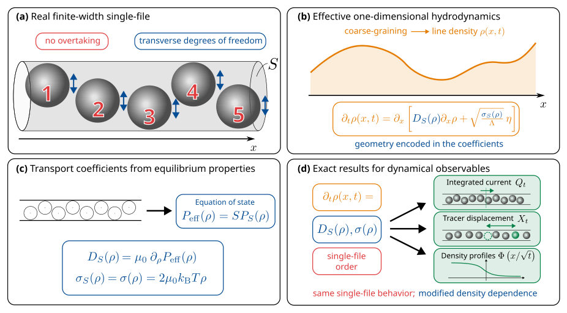
<figcaption class="paper-figure-caption"><b>Fig 1.</b> Figure 1: Geometry enters single-file dynamics through the transport coefficients. (a) Brownian particles diffuse in a channel of transverse section S. Their longitudinal order is conserved, which forbids overtaking, while transverse exploration remains allowed. This allows one to define a numbering of the particles which remains the same at all times. (b) Coarse-graining over the transverse coordinates defines the line density ρ(x, t). On large scales, ρ(x, t) obeys an exact one-dimensional fluctuating hydrodynamics. The field is one-dimensional, and all microscopic information enters through the transport coefficients DS(ρ) and σS(ρ). (c) The confined equilibrium problem determines the...</figcaption>
</figure>
<figure class="paper-figure-card">
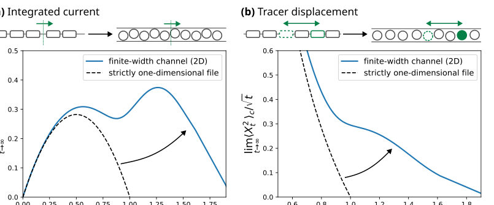
<figcaption class="paper-figure-caption"><b>Fig 2.</b> Figure 2: Finite width reshapes the density dependence of dynamical observables. (a) Fluctuations of the integrated current. (b) Fluctuations of the displacement of a tracer. The strictly one-dimensional hard-rod description does not reproduce the qualitatively different density dependence found in a finite-width two-dimensional channel of hard disks. The plots are for particles of size s = 1 in a channel of width 1.86.</figcaption>
</figure>
<figure class="paper-figure-card">
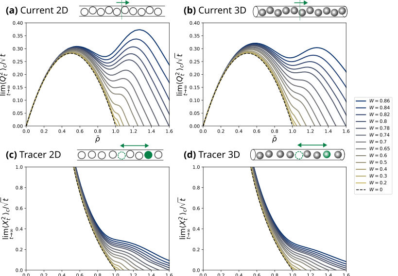
<figcaption class="paper-figure-caption"><b>Fig 3.</b> Figure 3: Robustness with respect to channel geometry. The effect is robust to the dimension and transverse size s + W of the channels. The plots are for hard-core particles of size s = 1 with an annealed initial condition.</figcaption>
</figure>
<figure class="paper-figure-card">
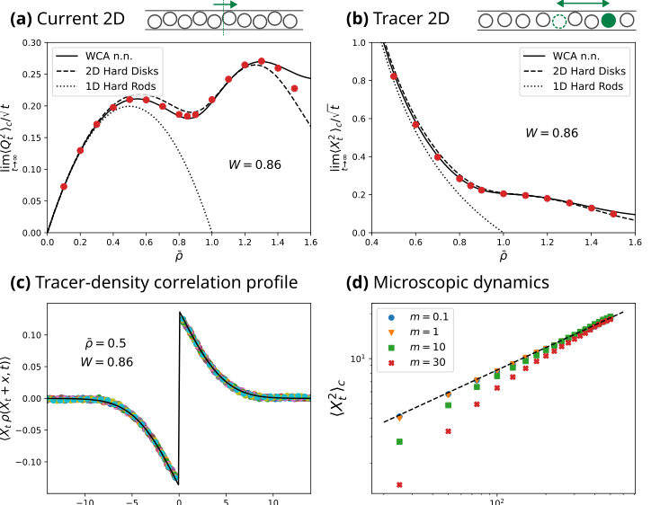
<figcaption class="paper-figure-caption"><b>Fig 4.</b> Figure 4: Robustness with respect to interaction, initial preparation and dynamics. (a)(b) The effect persists for a smooth interaction and a quenched initial preparation. The points are obtained from numerical simulations performed with LAMMPS [41] with N = 800 particles in 2d channels of different length L and width 1.86 with Weeks-Chandler-Andersen potential [40], damping factor γ = 1/µ0 = 1, temperature T = 1 and mass m = 0.1. Initially, the particles are equally spaced, corresponding to a quenched preparation. (c) Bath–tracer density profile associated with a tracer displacement for a quenched initial condition. The profile shows the large-scale rearrangement of the surrounding...</figcaption>
</figure>
</div>

<p><strong>Summary.</strong> This work investigates single-file particle transport in quasi-1D channels, demonstrating that residual transverse geometry significantly influences large-scale collective transport laws. By deriving an exact fluctuating hydrodynamics equation, the authors show that geometric effects modify key observables like diffusivity and current fluctuations compared to idealized 1D models. This highlights that confinement is not merely a restriction of dimensionality but actively shapes the system's thermodynamics.</p>
<p><strong>Why it may be interesting.</strong> It provides a rigorous theoretical framework showing how geometric constraints (transverse confinement) persist and modify macroscopic transport properties even when the primary dynamics are restricted to one dimension, which is relevant for understanding confined quantum systems or mesoscopic devices.</p>
<details>
<summary>Detailed structure</summary>
<p><strong>Main problem.</strong> To determine if residual transverse geometry affects large-scale transport laws in quasi-one-dimensional single-file systems, challenging the standard assumption that such effects are negligible once overtaking is forbidden.</p>
<p><strong>Main result.</strong> The finite width of the channel dictates the coefficients of the effective 1D fluctuating hydrodynamics, causing collective diffusivity to become non-monotonic with density, a deviation from purely 1D models.</p>
<p><strong>Method.</strong> Derivation of exact large-scale one-dimensional fluctuating hydrodynamics by coarse-graining microscopic Brownian dynamics and calculating transport coefficients via linear response theory and free energy analysis.</p>
<p><strong>Model / system.</strong> Brownian particles confined in a channel with finite transverse width, exhibiting single-file transport (no overtaking). The system is analyzed using continuum field theories derived from the microscopic dynamics.</p>
<p><strong>Key observables.</strong> Collective diffusivity ($D_S(
ho)$), integrated current fluctuations ($\langle Q^2_t 
angle$), and tracer displacement fluctuations ($\langle X^2_t 
angle$).</p>
<p><strong>Important parameters / regimes.</strong> Finite channel width, density ($
ho$), large length scales ($\Lambda$), and the interaction potential (e.g., hard-core repulsion).</p>
<p><strong>Assumptions / limitations.</strong> The analysis relies on deriving an effective 1D hydrodynamics from a full confined geometry, assuming local equilibrium approximations for calculating pressure and transport coefficients.</p>
<p><strong>Figures summary.</strong> Figures illustrate how geometry enters through transport coefficients, showing density dependence of current/tracer fluctuations that differs qualitatively from strictly 1D hard-rod descriptions; robustness is shown across different channel shapes and potentials.</p>
<p><strong>Paper structure.</strong> The paper first establishes the microscopic dynamics and derives the general fluctuating hydrodynamics equation. It then focuses on determining the effective pressure and transport coefficients for the single-file geometry using partition function methods, culminating in predictions for large-scale fluctuation observables under various initial conditions.</p>
</details>
<details>
<summary>Abstract</summary>
<p>Single-file transport means no overtaking: particles move in a narrow channel while preserving their longitudinal order. This simple constraint has profound dynamical consequences, most notably tracer subdiffusion, and has made single-file transport a paradigmatic form of confined many-body motion, observed from molecular transport in zeolites to single-file diffusion of colloids in narrow channels. The standard view is that, once overtaking is suppressed, collective transport reduces to that of a strictly one-dimensional file. Here we show that this reduction fails in experimentally relevant finite-width channels: even when exchange is forbidden, the transverse equilibrium structure controls the transport laws and can qualitatively reshape them. Starting from the Brownian dynamics in the full confined geometry, we derive an exact large-scale one-dimensional fluctuating hydrodynamics for the longitudinal density, whose coefficients are fixed by the confined equilibrium equation of state. In the minimal hard-core setting, this yields a collective diffusivity that can become non-monotonic in density. This geometric anomaly propagates to exact large-scale predictions for integrated-current fluctuations, tracer displacement fluctuations and the associated density profiles. The effect is robust to the interaction potential, channel geometry, initial preparation and microscopic dynamics. Quasi-one-dimensional single-file transport therefore defines a distinct regime in which forbidding overtaking does not erase geometry from collective transport.</p>
</details>
<p><sub><a href="#top">↑ back to top</a></sub></p>

<p><a id="paper-2606.10741"></a></p>
<h3 id="layer-parity-dependent-interfacial-coupling-in-nbmath501mathclmath502mathgraphene-van-der-waals-heterostructures"><a href="http://arxiv.org/abs/2606.10741v1">Layer-parity-dependent interfacial coupling in Nb$_3$Cl$_8$/graphene van der Waals heterostructures</a></h3>
<p><strong>Authors:</strong> Hansheng Xu, Yuchen Gao, Xinyue Huang, Weihanzhang Guo, Zhijie Ma, Ziqi Liu, Pinfan Gu, Kenji Watanabe, Takashi Taniguchi, Youguo Shi, Yu Ye<br>
<strong>Type:</strong> both · <strong>Category:</strong> strongly correlated electrons · <strong>PDF:</strong> <a href="https://arxiv.org/pdf/2606.10741v1">https://arxiv.org/pdf/2606.10741v1</a><br>
<strong>Analysis basis:</strong> full PDF text, analyzed in chunks
<strong>Topic relevance:</strong> <code>analog quantum simulation</code> <strong>3/5</strong> · <code>spintronics-quantum-optics interface</code> <strong>3/5</strong> · <code>driven-dissipative phase transition</code> <strong>2/5</strong> · <code>Keldysh / 2PI / non-Gaussian methods</code> <strong>1/5</strong> · <code>Kondo &amp; dissipative impurity</code> <strong>1/5</strong> · <code>methods for driven-dissipative</code> <strong>1/5</strong> · <code>non-equilibrium dynamics</code> <strong>1/5</strong></p>
<div class="figure-strip-hint">↔ Scroll figures horizontally</div>
<div class="paper-figures-scroll">
<figure class="paper-figure-card">
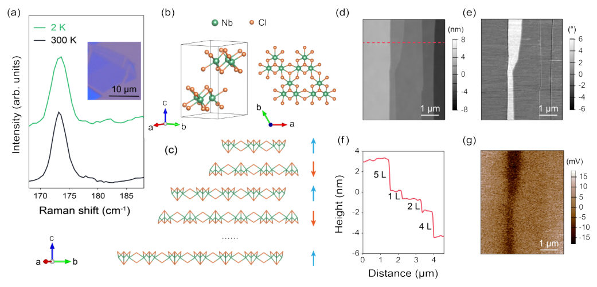
<figcaption class="paper-figure-caption"><b>Fig 1.</b> Fig. 1. Layer-parity-dependent out-of-plane polarization in exfoliated Nb3Cl8. (a), Raman spectra of bulk Nb3Cl8 and few-layer exfoliated samples at 2 K, showing characteristic A1 1g (at 173 cm−1) peak of α-phase. Inset: the optical image of the exfoliated Nb3Cl8 flake. (b), Crystal structure of α-Nb3Cl8 showing the kagome lattice with a two-layer periodicity. (c), Schematic illustration of the layer-parity-dependent out-of-plane polarization. The different surface terminations lead to distinct electronic properties when coupled with graphene. (d-e), AFM morphology (d) and phase (e) maps of a representative few-layer Nb3Cl8 at the same region. (f), Height profile along the marked red dashed...</figcaption>
</figure>
<figure class="paper-figure-card">
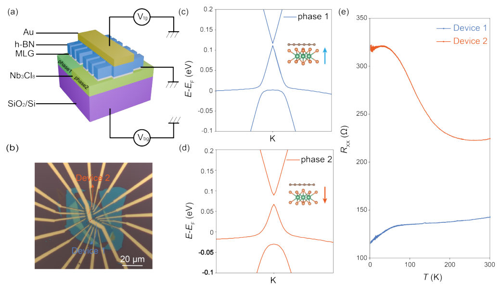
<figcaption class="paper-figure-caption"><b>Fig 2.</b> Fig. 2. Device structure and density functional theory calculations. (a), Schematic illustration of the dual-gated Hall bar device showing the layer stacking geometry. (b), Optical microscope image of the double-gate Hall Device 1 and Device 2 (separated by a red dashed line), in which the MLG is located on a few-layer Nb3Cl8 film with one layer thickness difference. (c), DFT-calculated band structure of the Nb3Cl8/MLG heterostructure for Phase 1 (upward polarization), showing the formation of a hybridization gap. (d), DFT-calculated band structure for Phase 2 (downward polarization), displaying a larger hybridization gap compared to Phase 1. Insets show the stacking structures of...</figcaption>
</figure>
<figure class="paper-figure-card">
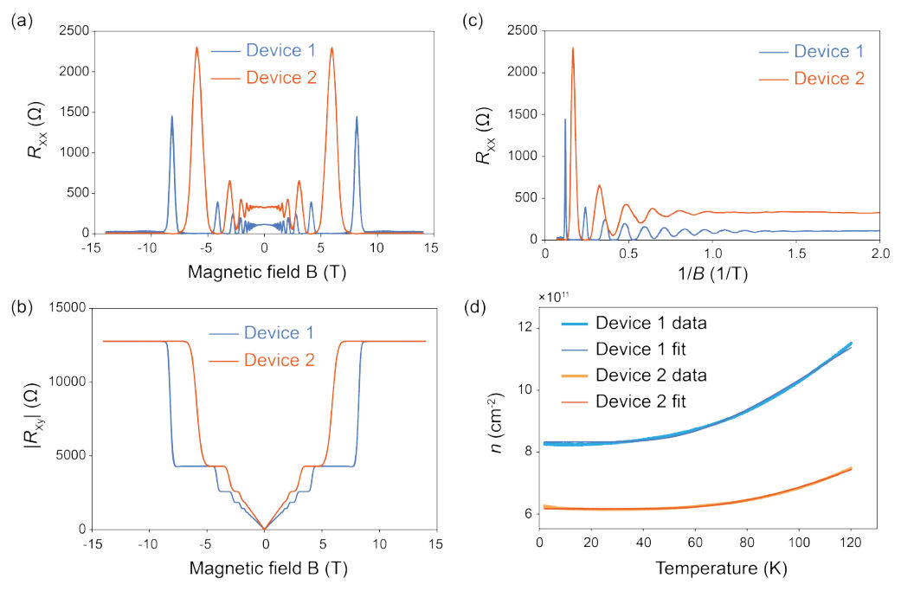
<figcaption class="paper-figure-caption"><b>Fig 3.</b> Fig. 3. Magnetotransport behavior of different phases Nb3Cl8/MLG heterostructure devices. (a), Longitudinal resistance Rxx as a function of magnetic field at zero gate voltages, measured at 2 K with the magnetic field applied perpendicular to the sample plane. (b), Hall resistance Rxy versus magnetic field for both devices under the same conditions. (c), Shubnikov–de Haas (SdH) oscillations plotted as Rxx versus 1/B. The oscillation frequencies yield carrier densities of n = 8.25 × 1011 cm−2 (6.12 × 1011 cm−2) for Device 1 and (Device 2). (d), Temperature-dependent carrier density at VTG = 0 V extracted from temperature-dependent Hall measurements. The data are fitted using the Fermi-Dirac...</figcaption>
</figure>
<figure class="paper-figure-card">
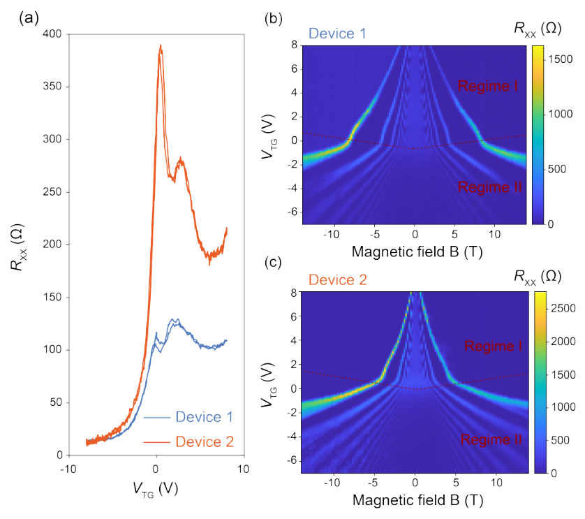
<figcaption class="paper-figure-caption"><b>Fig 4.</b> Fig. 4. Transport behavior of different phases Nb3Cl8/MLG devices under gate and magnetic field regulation. (a), Longitudinal resistance versus VTG at 2 K without applying a magnetic field, showing distinct gate-dependent behaviors reflecting different interfacial coupling strengths. (b-c), Landau fan diagrams showing Rxx as a function of VTG and magnetic field at 2 K for Device 1 and Device 2, respectively. Two distinct regimes separated by red dashed lines are visible. The steeper slope of the Landau fan in Regime I for Device 2 further confirms the larger magnitude of charge transfer, demonstrating the phase-dependent interfacial coupling effect.</figcaption>
</figure>
</div>

<p><strong>Summary.</strong> This work demonstrates that the surface polarization of the Mott insulator $   ext{Nb}_3   ext{Cl}_8$ critically controls its interaction with graphene. By fabricating heterostructures on surfaces exhibiting different polarizations, the authors show distinct electronic coupling strengths and measurable changes in transport gaps, highlighting layer-parity engineering as a tool for controlling correlated material properties.</p>
<p><strong>Why it may be interesting.</strong> The explicit link drawn between crystal symmetry breaking (polarization) and tunable electronic coupling in a correlated material platform is highly relevant for designing novel quantum devices based on interfacial engineering.</p>
<details>
<summary>Detailed structure</summary>
<p><strong>Main problem.</strong> The study investigates how the layer-parity-dependent out-of-plane polarization of a Mott insulator ($    ext{Nb}_3   ext{Cl}_8$) dictates the interfacial coupling strength and electronic properties when coupled with graphene.</p>
<p><strong>Main result.</strong> Different surface polarizations lead to distinct coupling strengths, evidenced by measurable differences in hybridization gaps (25.2 meV vs 30.0 meV) and charge transfer magnitudes in transport measurements.</p>
<p><strong>Method.</strong> The research combines experimental characterization using AFM/KPFM with magnetotransport measurements on fabricated devices, corroborated by DFT calculations.</p>
<p><strong>Model / system.</strong> The system is a van der Waals heterostructure formed by coupling monolayer graphene (MLG) to $  ext{Nb}_3   ext{Cl}_8$, which exhibits layer-parity dependent polarization due to its Mott insulating nature.</p>
<p><strong>Key observables.</strong> Hybridization gap ($\Delta$), charge transfer magnitude (inferred from Landau fan slopes), carrier density ($n$), and surface potential/polarization state.</p>
<p><strong>Important parameters / regimes.</strong> Layer parity (odd vs. even layers), hybridization gap values (25.2 meV, 30.0 meV), and polarization direction (upward vs. downward).</p>
<p><strong>Assumptions / limitations.</strong> The coupling mechanism is strongly dependent on the local surface termination/polarization state of the Mott insulator.</p>
<p><strong>Figures summary.</strong> Figures illustrate AFM phase maps showing layer-parity dependence, KPFM potential mapping, and transport data (R-T, B-field) comparing devices built on different $    ext{Nb}_3   ext{Cl}_8$ phases.</p>
<p><strong>Paper structure.</strong> The paper first establishes the physical phenomenon of layer-parity dependent polarization using AFM/KPFM. It then builds dual-gate Hall devices on these distinct surface phases to measure transport properties, comparing results (e.g., gap size, carrier density) between phases associated with different polarizations.</p>
</details>
<details>
<summary>Abstract</summary>
<p>Strongly correlated two-dimensional systems provide compelling platforms for investigating exotic quantum phenomena. Niobium chloride (Nb$_3$Cl$_8$), a single-band Mott insulator, exhibits a remarkable out-of-plane polarization in its topmost layer that oscillates with layer parity, manifesting as an odd-even effect. Using atomic force microscopy (AFM) and Kelvin probe force microscopy (KPFM), this layer-parity-dependent polarization can be effectively characterized through surface morphology and potential mapping, enabling the unambiguous identification of different surface phases. We then fabricated dual-gate Hall devices by coupling different surface phases of Nb$_3$Cl$_8$ with monolayer graphene to investigate how the topmost-layer out-of-plane polarization influences interfacial coupling and the resulting transport behavior. Our results reveal significant phase-dependent variations in charge transfer, carrier densities, and hybridization gaps (25.2 meV for Phase 1 and 30.0 meV for Phase 2). Density functional theory calculations corroborate these experimental findings, showing that distinct out-of-plane polarizations in the topmost layer lead to different orbital overlaps and interfacial coupling strengths. These findings highlight the critical importance of surface polarization and orbital orientation in engineering the properties of strongly correlated van der Waals heterostructures.</p>
</details>
<p><sub><a href="#top">↑ back to top</a></sub></p>

<p><a id="paper-2606.10915"></a></p>
<h3 id="local-density-of-states-distribution-and-multifractal-eigenvectors-of-weighted-random-networks-via-the-cavity-approach"><a href="http://arxiv.org/abs/2606.10915v1">Local density of states distribution and multifractal eigenvectors of weighted random networks via the cavity approach</a></h3>
<p><strong>Authors:</strong> Joseph W. Baron, Tim Rogers<br>
<strong>Type:</strong> theory · <strong>Category:</strong> disordered systems and neural networks · <strong>PDF:</strong> <a href="https://arxiv.org/pdf/2606.10915v1">https://arxiv.org/pdf/2606.10915v1</a><br>
<strong>Analysis basis:</strong> full PDF text, analyzed in chunks
<strong>Topic relevance:</strong> <code>Keldysh / 2PI / non-Gaussian methods</code> <strong>3/5</strong> · <code>methods for driven-dissipative</code> <strong>2/5</strong> · <code>analog quantum simulation</code> <strong>1/5</strong> · <code>correlated / nonlocal dissipation</code> <strong>1/5</strong> · <code>correlated cavity matter</code> <strong>1/5</strong> · <code>driven-dissipative phase transition</code> <strong>1/5</strong> · <code>entanglement &amp; information structure</code> <strong>1/5</strong> · <code>non-equilibrium dynamics</code> <strong>1/5</strong> · <code>non-equilibrium universality</code> <strong>1/5</strong></p>
<div class="figure-strip-hint">↔ Scroll figures horizontally</div>
<div class="paper-figures-scroll">
<figure class="paper-figure-card">
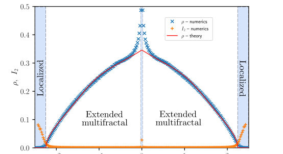
<figcaption class="paper-figure-caption"><b>Fig 1.</b> FIG. 1: Global density of states ρ and IPR I2 for a sparse ER graph with uniformly distributed uij = W 2 ij. Other weight distributions produce qualitatively similar results. The theory line for ρ(ω) is found by solving Eq. (16) numerically with β4 = 4/3 and β6 = 2 and p = 5 and using ρ = π−1 limϵ→0 Im⟨G(ω −iϵ)⟩. Numerics are the result of diagonalising 500 matrices with size N = 4000.</figcaption>
</figure>
<figure class="paper-figure-card">
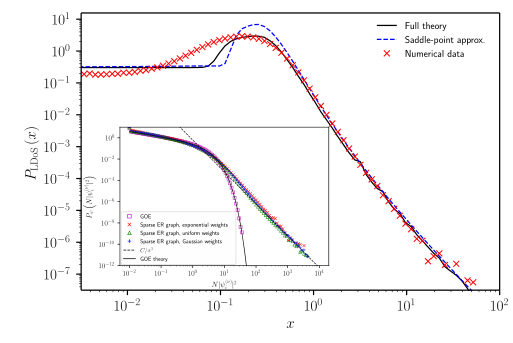
<figcaption class="paper-figure-caption"><b>Fig 2.</b> FIG. 2: Local density of states distribution for the ER graph adjacency matrix with uniformly distributed uij = W 2 ij at ω = 0.4. Comparison is made with Eq. (20) (solid black line) and the sum of Eqs. (21) and (B12) (dashed blue line). (Inset) The distribution Pψ(y) for the three weight distributions described in Section II, The theory line Pψ(y) = B/y3 is shown as a dashed line (with the constant B numerically fitted). Parameters: p = 3.4, ω = 0.4, N = 104, and results are averaged over 100 trials.</figcaption>
</figure>
<figure class="paper-figure-card">
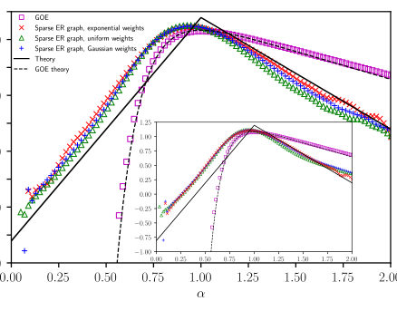
<figcaption class="paper-figure-caption"><b>Fig 3.</b> FIG. 3: Singularity spectrum for the three weight distributions mentioned in Section II at ω = 0.4, with p = 3.4 and N = 104 averaged over 100 trials. GOE is also given for contrast. The solid black line is the result in Eq. (26). (Inset) The case of non-zero diagonal disorder with W = 0.3. The singularity spectrum remains unchanged when W (the amount of diagonal disorder) is sufficiently small.</figcaption>
</figure>
<figure class="paper-figure-card">
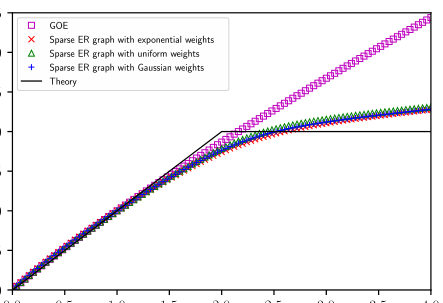
<figcaption class="paper-figure-caption"><b>Fig 4.</b> FIG. 4: The scaling exponent τq = D(q)(q −1) for the same ensembles and parameters as in Fig. 3. The solid line is given by the result in Eq. (27).</figcaption>
</figure>
<figure class="paper-figure-card">
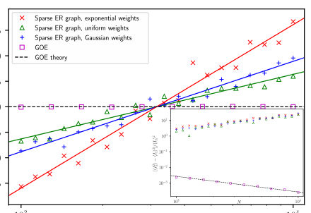
<figcaption class="paper-figure-caption"><b>Fig 5.</b> FIG. 5: Logarithmic scaling of the IPR with N for system parameters and ensembles given in Fig. 3. We have shifted the data so that each set of points passes through the origin. We show lines of best fit as guide to the eye. Since the constant B varies between ensembles (where Pψ(y) = B/y3</figcaption>
</figure>
</div>

<p><strong>Summary.</strong> This theoretical paper analyzes the spectral properties of weighted random networks by studying the Local Density of States (LDoS) distribution. Using the cavity method, it determines that the LDoS exhibits a universal power-law tail with an exponent of 3. Furthermore, it characterizes the corresponding eigenvectors as weakly multifractal, providing quantitative measures like fractal dimensions and scaling exponents.</p>
<p><strong>Why it may be interesting.</strong> The findings on weak multifractality and non-trivial IPR scaling provide quantitative benchmarks for understanding spectral localization transitions in complex disordered quantum systems, which is relevant to many open quantum system models.</p>
<details>
<summary>Detailed structure</summary>
<p><strong>Main problem.</strong> The study investigates the local density of states (LDoS) distribution and the multifractal nature of eigenvectors in weighted random networks.</p>
<p><strong>Main result.</strong> The LDoS distribution is found to exhibit a universal power-law tail with an exponent of 3, indicating that the corresponding eigenvectors are weakly multifractal. The system shows unusual logarithmic scaling for the Inverse Participation Ratio (IPR).</p>
<p><strong>Method.</strong> The analysis heavily relies on the cavity method and advanced techniques from Random Matrix Theory, including perturbative expansions and saddle-point approximations.</p>
<p><strong>Model / system.</strong> The model is a weighted Erdős-Rényi graph ensemble characterized by weighted adjacency matrices $J$. The investigation analyzes spectral properties across different phases (extended, localized, multifractal).</p>
<p><strong>Key observables.</strong> Local Density of States ($
ho_i(\omega)$), Singularity Spectrum ($f(\alpha)$), Fractal Dimensions ($D(q)$), and the Inverse Participation Ratio ($I_2$).</p>
<p><strong>Important parameters / regimes.</strong> The analysis is sensitive to the weight distribution, particularly requiring a non-zero probability mass at zero for certain exponents. The system behavior is analyzed in the thermodynamic limit ($N 	o \infty$).</p>
<p><strong>Assumptions / limitations.</strong> Key approximations include truncating moment expansions (e.g., $O(p^{-2})$) and using Laplace's method to derive asymptotic forms for the LDoS distribution.</p>
<p><strong>Figures summary.</strong> Figures illustrate the global density of states, the LDoS power-law tail behavior, and the singularity spectrum derived from eigenvector statistics.</p>
<p><strong>Paper structure.</strong> The paper systematically develops approximations for the resolvent elements using the cavity method to determine the LDoS distribution. It then relates the asymptotic tails of this distribution to the scaling properties of the eigenvectors, deriving fractal dimensions and symmetry relations.</p>
</details>
<details>
<summary>Abstract</summary>
<p>We study the local density of states (LDoS) distribution of a general class of weighted Erdős-Rényi graphs. Using the cavity method, we obtain a good approximation to the full LDoS distribution and compact expressions for its power-law tails, which we show to have exponent $3$ in the extended phase. We deduce that the eigenvectors in the continuous part of the spectrum are extended but (weakly) multifractal, and we extract expressions for the associated fractal dimensions and the singularity spectrum. We also demonstrate that the inverse participation ratio in this multifractal phase exhibits an unusual logarithmic scaling with system size, which is neither fully-extended nor localised by the usual definitions. Finally, we verify that some symmetry properties (derived from the non-linear sigma model), which have been shown to hold for many systems exhibiting multifractality, also hold in our case, both for the LDoS distribution and the singularity spectrum.</p>
</details>
<p><sub><a href="#top">↑ back to top</a></sub></p>

<p><a id="paper-2606.10266"></a></p>
<h3 id="a-recrossing-free-dividing-surface-in-quantum-mechanics"><a href="http://arxiv.org/abs/2606.10266v1">A Recrossing-Free Dividing Surface in Quantum Mechanics</a></h3>
<p><strong>Authors:</strong> Pouya Khazaei<br>
<strong>Type:</strong> theory · <strong>Category:</strong> other · <strong>PDF:</strong> <a href="https://arxiv.org/pdf/2606.10266v1">https://arxiv.org/pdf/2606.10266v1</a><br>
<strong>Analysis basis:</strong> full PDF text, analyzed in chunks
<strong>Topic relevance:</strong> <code>methods for driven-dissipative</code> <strong>3/5</strong> · <code>Keldysh / 2PI / non-Gaussian methods</code> <strong>2/5</strong> · <code>non-equilibrium dynamics</code> <strong>2/5</strong> · <code>driven-dissipative phase transition</code> <strong>1/5</strong> · <code>quantum measurements</code> <strong>1/5</strong></p>
<div class="figure-strip-hint">↔ Scroll figures horizontally</div>
<div class="paper-figures-scroll">
<figure class="paper-figure-card">
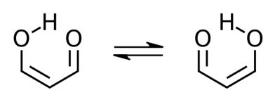
<figcaption class="paper-figure-caption"><b>Fig 1.</b> FIG. 1. Schematic of the cis–cis proton transfer reaction in malonaldehyde.</figcaption>
</figure>
<figure class="paper-figure-card">
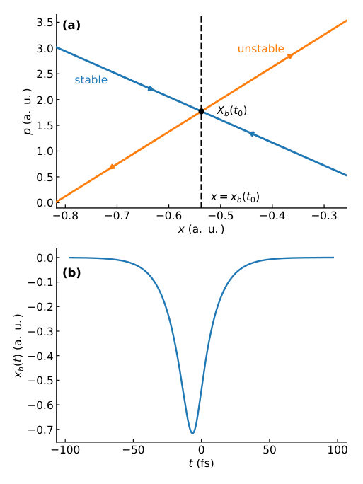
<figcaption class="paper-figure-caption"><b>Fig 2.</b> FIG. 2. (a) Phase-space geometry at t0 = 0. The stable and unstable manifolds, W s(t0) and W u(t0), intersect at the bounded quantum transition-state trajectory Xb(t0); the ver- tical dashed line x = xb(t0) is the corresponding instanta- neous dividing surface. Because Xb(t0) lies at this intersec- tion, it anchors a recrossing-free dividing surface. (b) The bounded trajectory xb(t), which stays localized for all time and whose projection traces the time-dependent recrossing- free dividing surface. Parameters: the barrier-top model for cis–cis proton transfer in malonaldehyde, with Gaussian wavepacket parameters q0 = −1, p0 = 3.6, A0 = 1</figcaption>
</figure>
<figure class="paper-figure-card">
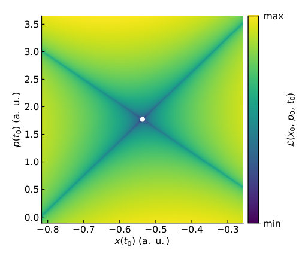
<figcaption class="paper-figure-caption"><b>Fig 3.</b> FIG. 3. Lagrangian descriptor of the quantum Hamiltonian flow for the barrier-top model motivated by cis–cis proton transfer in malonaldehyde, evaluated at t0 = 0. The de- scriptor L(x0, p0, t0) is computed over a finite time window τ = 4000 a.u. using α = 0.2. Sharp features in the forward and backward contributions identify the stable and unstable manifolds, respectively. Their intersection, marked by the dot, gives the bounded quantum transition-state trajectory and hence the recrossing-free dividing surface.</figcaption>
</figure>
</div>

<p><strong>Summary.</strong> The paper resolves a long-standing theoretical conflict by proving that a recrossing-free dividing surface exists in the exact quantum flow. It achieves this by analyzing the system's invariant manifold structure, which dictates a unique bounded trajectory defining the reaction barrier. This confirms that classical concepts of reactive flux are fundamentally preserved in quantum mechanics.</p>
<p><strong>Why it may be interesting.</strong> This work provides a rigorous mathematical foundation for applying classical concepts like transition state theory to quantum dynamics by showing how geometric invariants (invariant manifolds) dictate non-classical transport features.</p>
<details>
<summary>Detailed structure</summary>
<p><strong>Main problem.</strong> To demonstrate that a recrossing-free dividing surface, necessary for defining one-way reactive flux in quantum mechanics, exists despite apparent conflicts with the uncertainty principle.</p>
<p><strong>Main result.</strong> The existence of a unique bounded trajectory, anchored by an intersection of stable and unstable invariant manifolds, confirms that the geometric framework of classical transition state theory extends to the exact quantum flow.</p>
<p><strong>Method.</strong> The analysis uses a trajectory-based formulation derived from the Schrödinger equation, employing techniques from nonautonomous dynamical systems theory, specifically establishing exponential dichotomy.</p>
<p><strong>Model / system.</strong> The system is modeled using quantum reaction dynamics, exemplified by the cis–cis proton transfer in malonaldehyde. The underlying physics involves solving coupled equations derived from the continuity and Hamilton-Jacobi equations, leading to an effective Hamiltonian.</p>
<p><strong>Key observables.</strong> One-way flux of the standard quantum probability current ($j$), the rate coefficient $k(t)$, and the unique bounded trajectory $X_b(t)$ defining the dividing surface $\Sigma(t)$.</p>
<p><strong>Important parameters / regimes.</strong> The system dynamics are analyzed in regimes where linear nonautonomous approximations hold, particularly for Gaussian wavepacket evolution.</p>
<p><strong>Assumptions / limitations.</strong> The initial analysis relies on approximating the dynamics by retaining only quadratic terms, although this approximation is shown to be exact for specific wavepacket dynamics against a harmonic barrier.</p>
<p><strong>Figures summary.</strong> Figure 1 schematically illustrates the proton transfer reaction. Figure 2 shows phase-space geometry, illustrating how the intersection of stable and unstable manifolds defines the instantaneous dividing surface $x = x_b(t)$.</p>
<p><strong>Paper structure.</strong> The paper establishes the theoretical conflict, derives the necessary quantum equations of motion using trajectory methods, proves the existence of a unique bounded solution via exponential dichotomy, and finally applies this framework to calculate reaction rates using flux conservation across the resulting recrossing-free surface.</p>
</details>
<details>
<summary>Abstract</summary>
<p>For nearly a century, a recrossing-free dividing surface in quantum mechanics has been thought impossible. One-way reactive flux seems to require simultaneous trajectory-level knowledge of position and momentum -- an apparent conflict with the uncertainty principle. We show that this obstruction is not fundamental. The exact quantum flow can admit stable and unstable invariant manifolds whose intersection defines a unique bounded trajectory. This trajectory anchors a moving dividing surface that reactive quantum characteristics cross exactly once, producing a one-way flux of the standard quantum probability current. The geometric framework underlying classical reaction dynamics therefore carries over to the exact quantum flow, in a fundamentally quantum form.</p>
</details>
<p><sub><a href="#top">↑ back to top</a></sub></p>

<p><a id="paper-2606.10397"></a></p>
<h3 id="improved-selector-behavior-in-ultrathin-chromium-doped-vmath521mathomath522math-films"><a href="http://arxiv.org/abs/2606.10397v1">Improved selector behavior in ultrathin chromium-doped V$_2$O$_3$ films</a></h3>
<p><strong>Authors:</strong> Johannes Mohr, Tyler Hennen, Yudi Wang, Xiaoyu Xu, Loc Vinh, Dirk J. Wouters, Rainer Waser, Joyeeta Nag, Daniel Bedau<br>
<strong>Type:</strong> experiment · <strong>Category:</strong> strongly correlated electrons · <strong>PDF:</strong> <a href="https://arxiv.org/pdf/2606.10397v1">https://arxiv.org/pdf/2606.10397v1</a><br>
<strong>Analysis basis:</strong> full PDF text, analyzed in chunks
<strong>Topic relevance:</strong> <code>spintronics-quantum-optics interface</code> <strong>3/5</strong> · <code>driven-dissipative phase transition</code> <strong>2/5</strong> · <code>Kondo &amp; dissipative impurity</code> <strong>1/5</strong> · <code>analog quantum simulation</code> <strong>1/5</strong> · <code>exotic spin models in light-matter</code> <strong>1/5</strong> · <code>non-equilibrium dynamics</code> <strong>1/5</strong></p>
<div class="figure-strip-hint">↔ Scroll figures horizontally</div>
<div class="paper-figures-scroll">
<figure class="paper-figure-card">
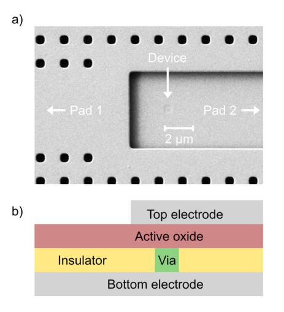
<figcaption class="paper-figure-caption"><b>Fig 1.</b> Figure 1: a) SEM image of the finished structure. The device is visible in the center as</figcaption>
</figure>
<figure class="paper-figure-card">
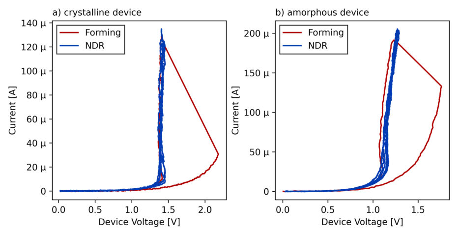
<figcaption class="paper-figure-caption"><b>Fig 2.</b> Figure 2: Negative differential resistance behavior (blue) is observed after an initial</figcaption>
</figure>
<figure class="paper-figure-card">
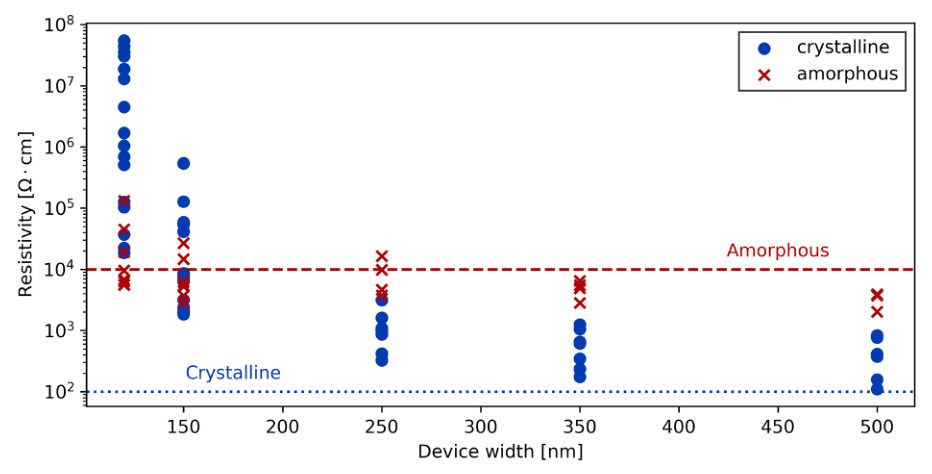
<figcaption class="paper-figure-caption"><b>Fig 3.</b> Figure 3: Resistivities calculated for the different cell sizes assuming a homogeneous</figcaption>
</figure>
<figure class="paper-figure-card">

<figcaption class="paper-figure-caption"><b>Fig 4.</b> Figure 4: Bright field TEM images of four types of V2O3 films deposited on TiN bottom</figcaption>
</figure>
<figure class="paper-figure-card">

<figcaption class="paper-figure-caption"><b>Fig 5.</b> Figure 4 demonstrates that the films show an approximately columnar growth mode,</figcaption>
</figure>
</div>

<p><strong>Summary.</strong> This work investigates using ultrathin chromium-doped V2O3 films as promising selector elements for advanced memory devices. By achieving stable switching down to 5 nm, the authors demonstrate that interfacial amorphous layers, rather than bulk crystallinity, govern the desirable electrical properties like low leakage current and sharp transitions. The findings guide future device design by pinpointing the critical role of interface engineering.</p>
<p><strong>Why it may be interesting.</strong> While focused on solid-state electronics, the underlying physics involves Mott transitions and charge localization in correlated oxides, which touches upon concepts relevant to strongly correlated electron systems studied theoretically.</p>
<details>
<summary>Detailed structure</summary>
<p><strong>Main problem.</strong> Developing reliable selector elements for next-generation memory and neuromorphic devices using ultrathin chromium-doped V2O3 films.</p>
<p><strong>Main result.</strong> The switching effect is maintained down to 5 nm, with improved low leakage current and abrupt transitions observed. The electrical behavior suggests that the switching mechanism is dominated by a thin amorphous interfacial layer rather than the bulk crystalline material.</p>
<p><strong>Method.</strong> Electrical characterization (I-V sweeps) combined with advanced structural/compositional analysis using TEM, EELS, and EDX mapping.</p>
<p><strong>Model / system.</strong> The physical system is a device structure based on chromium-doped V2O3 acting as a Mott-insulator exhibiting negative differential resistance via an electronically triggered metal-insulator transition. The study compares performance in both crystalline and amorphous film forms.</p>
<p><strong>Key observables.</strong> Switching effect, Negative Differential Resistance (NDR), leakage current ($\mu	ext{A}$ range), forming voltage, and interfacial elemental distribution.</p>
<p><strong>Important parameters / regimes.</strong> Film thickness down to 5 nm; doping concentration (15% Cr); operating voltages relative to threshold voltages.</p>
<p><strong>Assumptions / limitations.</strong> The improved properties are attributed to the formation of a thin amorphous layer at the TiN interface, which dictates the resistive switching mechanism.</p>
<p><strong>Figures summary.</strong> Figures illustrate device cross-sections, I-V curves showing NDR behavior after forming, and elemental maps revealing complex dopant distribution and Ti diffusion into the electrode interface.</p>
<p><strong>Paper structure.</strong> The paper progresses from establishing the potential of Cr:V2O3 for selectors to presenting electrical measurements across varying thicknesses. It then uses TEM/EDX to analyze structural changes (amorphous layers) that correlate with the observed improved electrical performance, concluding with scaling predictions.</p>
</details>
<details>
<summary>Abstract</summary>
<p>Devices based on the negative differential resistance effect in chromium doped V$_2$O$_3$ are considered to be promising as selector elements for use in emerging memory technologies, as well as for neuromorphic applications. It is shown by electrical measurements, that the switching effect is maintained for very thin films down to 5 nm, and even improved properties such as a low leakage current and an abrupt transition are observed. For these thicknesses, the behavior of crystalline and amorphous films becomes very similar; most strikingly, a forming step is required in both. Transmission electron microscopy reveals this to be likely due to a thin amorphous layer that forms at the interface to the TiN electrode. Elemental mapping further shows a complex distribution of the chromium dopants, as well as a diffusion of Ti into the layer from the electrode, which might be responsible for the improved properties.</p>
</details>
<p><sub><a href="#top">↑ back to top</a></sub></p>

<p><a id="paper-2606.10800"></a></p>
<h3 id="pair-creation-amplitudes-for-a-real-scalar-field-coupled-to-a-time-dependent-surface-in-d1-dimensions"><a href="http://arxiv.org/abs/2606.10800v1">Pair creation amplitudes for a real scalar field coupled to a time-dependent surface in d+1 dimensions</a></h3>
<p><strong>Authors:</strong> C. D. Fosco, B. C. Guntsche<br>
<strong>Type:</strong> theory · <strong>Category:</strong> other · <strong>PDF:</strong> <a href="https://arxiv.org/pdf/2606.10800v1">https://arxiv.org/pdf/2606.10800v1</a><br>
<strong>Analysis basis:</strong> full PDF text, analyzed in chunks
<strong>Topic relevance:</strong> <code>Keldysh / 2PI / non-Gaussian methods</code> <strong>3/5</strong> · <code>non-equilibrium dynamics</code> <strong>2/5</strong> · <code>correlated / nonlocal dissipation</code> <strong>1/5</strong> · <code>driven-dissipative phase transition</code> <strong>1/5</strong> · <code>methods for driven-dissipative</code> <strong>1/5</strong> · <code>non-equilibrium universality</code> <strong>1/5</strong></p>
<div class="figure-strip-hint">↔ Scroll figures horizontally</div>
<div class="paper-figures-scroll">
<figure class="paper-figure-card">

<figcaption class="paper-figure-caption"><b>Fig 1.</b> Figure 1: Angular distribution of the emitted particles in the localized, small- source regime, Eq. (41): a cos θ lobe along the normal to the surface. The dotted curve is the mirror image emitted into the xd &lt; 0 half-space.</figcaption>
</figure>
<figure class="paper-figure-card">

<figcaption class="paper-figure-caption"><b>Fig 2.</b> Figure 2: Pair-creation rate γ(ω) of Eq. (55) (in units of b2K2 s/(4π)) as a function of ω/Ks, for several values of λ/Ks. The Dirichlet limit (dashed) is the parabola 2(ω/Ks)(1 −ω/Ks). For λ ≲Ks the spectrum departs from the Dirichlet shape and develops a mild bimodal structure, the Lorentzian factor [1 + (2kq/λ)2]−1 favoring asymmetric partitions of the energy Ks.</figcaption>
</figure>
</div>

<p><strong>Summary.</strong> This theoretical paper investigates pair creation from a scalar field interacting with a moving boundary. It advances the calculation to fourth order, demonstrating that while lower orders confirm standard quantum field theory relations (like the optical theorem), higher orders reveal complex non-linear physics, including new second-harmonic emission and vacuum depletion effects.</p>
<p><strong>Why it may be interesting.</strong> This work is highly relevant to open quantum systems and quantum optics because it provides a rigorous framework for calculating non-perturbative vacuum excitation processes (like the Dynamical Casimir Effect) beyond simple leading-order approximations, showing how nonlinearities manifest in multi-pair channels.</p>
<details>
<summary>Detailed structure</summary>
<p><strong>Main problem.</strong> The study calculates pair creation amplitudes for a real scalar field due to its interaction with a time-dependent, deforming surface in d+1 dimensions.</p>
<p><strong>Main result.</strong> The calculation establishes that while the leading order probability correctly reproduces twice the imaginary part of the effective action (the optical theorem), higher orders reveal nonlinear effects, such as genuine second-harmonic emission and vacuum depletion corrections.</p>
<p><strong>Method.</strong> The authors employ perturbative quantum field theory techniques, expanding transition amplitudes in powers of the surface deformation parameter ($\psi$) and comparing results derived from exclusive scattering amplitudes with those obtained from the imaginary part of the effective action.</p>
<p><strong>Model / system.</strong> The system involves a massless real scalar field coupled to a time-dependent boundary defined by $\Sigma$. The interaction is modeled via an action term proportional to $\delta(x_d - \psi(\mathbf{x}_q))$, analyzed in the limit of Dirichlet boundary conditions.</p>
<p><strong>Key observables.</strong> Pair creation probability density, radiated power per unit solid angle ($rac{d\Omega}{Aq} rac{dW}{dk_0}$), and the total decay probability $P^{(2)}$ and $P^{(4)}$.</p>
<p><strong>Important parameters / regimes.</strong> The surface deformation function $\psi(\mathbf{x}_q)$, the coupling constant $\lambda$, and the dimensionality $d+1$. The analysis focuses on high-order corrections (up to fourth order).</p>
<p><strong>Assumptions / limitations.</strong> The calculation relies heavily on parity selection rules for non-vanishing terms, and several results are derived in the limit where the boundary condition is strictly Dirichlet ($\lambda 	o +\infty$).</p>
<p><strong>Figures summary.</strong> Figure 1 illustrates an angular distribution ($\propto \cos	heta$) for a harmonically oscillating bump. Figure 2 compares the pair-creation rate $\gamma(\omega)$ vs. $\omega/K_s$ for varying coupling strengths, showing spectral departures. Figure 3 shows the cutting rule relating the discontinuity of the effective action to the two-particle phase-space integral.</p>
<p><strong>Paper structure.</strong> The paper systematically calculates the amplitude expansion ($A = \sum A^{(n)}$) and the resulting probability density ($ ext{dP} \propto |A|^2$) up to fourth order. It then rigorously compares these direct calculations with established identities involving the imaginary part of the effective action, highlighting deviations at higher orders.</p>
</details>
<details>
<summary>Abstract</summary>
<p>We study the pair creation phenomenon for a real scalar field $\varphi$ in the presence of a surface that undergoes time-dependent deformations, while imposing Dirichlet-like boundary conditions. Including terms up to fourth order in the departure of the surface from an infinite plane, we present results for the angular dependence of the emission rate for the vacuum-to-pair process as a function of the geometry and the dynamics of the surface, as well as of the momenta of the emitted pair. We check the consistency of the leading contribution with previous results obtained from the imaginary part of the effective action, and clarify how the relation between exclusive probabilities and the imaginary part of the effective action is modified at fourth order by the opening of a two-pair channel.</p>
</details>
<p><sub><a href="#top">↑ back to top</a></sub></p>

<p><a id="paper-2606.10983"></a></p>
<h3 id="robust-self-testing-based-on-gisins-arbitrary-input-bell-inequality"><a href="http://arxiv.org/abs/2606.10983v1">Robust self-testing based on Gisin's arbitrary-input Bell inequality</a></h3>
<p><strong>Authors:</strong> Rajdeep Paul, Alok Kumar Pan<br>
<strong>Type:</strong> theory · <strong>Category:</strong> quantum information and computing · <strong>PDF:</strong> <a href="https://arxiv.org/pdf/2606.10983v1">https://arxiv.org/pdf/2606.10983v1</a><br>
<strong>Analysis basis:</strong> full PDF text, analyzed in chunks
<strong>Topic relevance:</strong> <code>quantum measurements</code> <strong>3/5</strong> · <code>measurement-induced transitions</code> <strong>2/5</strong> · <code>correlated / nonlocal dissipation</code> <strong>1/5</strong> · <code>driven-dissipative phase transition</code> <strong>1/5</strong> · <code>entanglement &amp; information structure</code> <strong>1/5</strong> · <code>methods for driven-dissipative</code> <strong>1/5</strong></p>
<div class="figure-strip-hint">↔ Scroll figures horizontally</div>
<div class="paper-figures-scroll">
<figure class="paper-figure-card">

<figcaption class="paper-figure-caption"><b>Fig 1.</b> Figure 1. Swap circuit for self-testing of state and observables for arbitrary n</figcaption>
</figure>
<figure class="paper-figure-card">

<figcaption class="paper-figure-caption"><b>Fig 2.</b> Figure 2. Trade-off between relative observed violation (r) and fi- delity Fs(r) for n = 3, 5, 7 and 11. Here, we are taking only that region where fidelity converges to one.</figcaption>
</figure>
<figure class="paper-figure-card">

<figcaption class="paper-figure-caption"><b>Fig 3.</b> Figure 3. Trade-off between relative observed violation (r) and fi- delity Fo(r) ∀O ∈{XB, ZB} for n = 3, 5, 7 and 11. Here, we are taking only that region where fidelity converges to one.</figcaption>
</figure>
</div>

<p><strong>Summary.</strong> This paper develops a comprehensive framework for robust self-testing of quantum states using Gisin's arbitrary-input Bell inequality. It uses an SOS approach to find optimal theoretical bounds and then extends this theory to account for inevitable experimental noise. The result provides quantifiable fidelity thresholds, allowing researchers to determine the minimum required quality of measurements needed to certify nonlocality.</p>
<p><strong>Why it may be interesting.</strong> This work provides rigorous theoretical tools to bridge the gap between idealized quantum theory predictions (optimal Bell violation) and practical experimental limitations imposed by noise, which is crucial for assessing real-world quantum device performance.</p>
<details>
<summary>Detailed structure</summary>
<p><strong>Main problem.</strong> The paper addresses the challenge of robustly certifying the quantum nature of a state and measurements using Gisin's arbitrary-input Bell inequality (GBI) in realistic, noisy experimental settings.</p>
<p><strong>Main result.</strong> They derive dimension-independent optimal quantum bounds for the GBI violation and establish concrete fidelity bounds that quantify how close an imperfect measurement must be to the ideal case to still certify entanglement/nonlocality.</p>
<p><strong>Method.</strong> The core methodology involves using a systematic Sum-of-Squares (SOS) approach for optimization, followed by developing a robust framework that analyzes the trace distance between ideal and noisy measurement outcomes.</p>
<p><strong>Model / system.</strong> The system is a bipartite quantum state $|\psi
angle_{AB}$ undergoing measurements defined by $n$ settings on both parties. The analysis generalizes to arbitrary number of inputs ($n$) and incorporates noise models ($\epsilon$).</p>
<p><strong>Key observables.</strong> Gisin's Bell Inequality violation $\langle G_n 
angle$, State Fidelity $F_s(r)$, Observable Fidelity $f_o(r)$, and the relative observed violation $r$.</p>
<p><strong>Important parameters / regimes.</strong> The number of measurement settings ($n$), the error parameter ($\epsilon$), and the relative observed violation ($r$).</p>
<p><strong>Assumptions / limitations.</strong> The robustness analysis assumes that errors primarily arise from imperfect observable implementations, allowing for bounding the trace distance between ideal and noisy measurements.</p>
<p><strong>Figures summary.</strong> Figures illustrate the Swap circuit used for self-testing and show trade-offs between increasing $n$ (more settings) versus increased vulnerability to noise.</p>
<p><strong>Paper structure.</strong> The paper systematically builds from deriving the optimal quantum violation using SOS techniques for general $n$, detailing specific cases ($n=3, 4$), introducing the swap circuit realization, and finally developing a comprehensive robust analysis quantifying fidelity bounds based on measurement errors ($\epsilon$).</p>
</details>
<details>
<summary>Abstract</summary>
<p>Self-testing refers to the strongest device-independent (DI) certification method that validates the nature of a quantum system and devices solely based on the observed statistics. We demonstrate the self-testing of state and measurements based on the Gisin Bell inequality (GBI) featuring arbitrary inputs for both parties. We introduce a systematic and elegant sum-of-squares (SOS) approach that enables the dimension-independent derivation of the optimal quantum violation of GBI. We derive the state and the interrelation between the local observables directly from the optimization condition. Since the practical experimental scenario involves inevitable noise and imperfection, we present a comprehensive strategy for robust self-testing.</p>
</details>
<p><sub><a href="#top">↑ back to top</a></sub></p>

<p><a id="paper-2606.10486"></a></p>
<h3 id="virial-stress-in-systems-of-active-brownian-particles-in-the-presence-of-translational-and-rotational-inertia"><a href="http://arxiv.org/abs/2606.10486v1">Virial stress in systems of active Brownian particles in the presence of translational and rotational inertia</a></h3>
<p><strong>Authors:</strong> Chandranshu Tiwari, Sunil P. Singh, Roland G. Winkler<br>
<strong>Type:</strong> theory · <strong>Category:</strong> statistical mechanics · <strong>PDF:</strong> <a href="https://arxiv.org/pdf/2606.10486v1">https://arxiv.org/pdf/2606.10486v1</a><br>
<strong>Analysis basis:</strong> full PDF text, analyzed in chunks
<strong>Topic relevance:</strong> <code>non-equilibrium dynamics</code> <strong>3/5</strong> · <code>non-equilibrium universality</code> <strong>2/5</strong> · <code>Frenkel-Kontorova</code> <strong>1/5</strong> · <code>Keldysh / 2PI / non-Gaussian methods</code> <strong>1/5</strong> · <code>driven-dissipative phase transition</code> <strong>1/5</strong> · <code>methods for driven-dissipative</code> <strong>1/5</strong></p>
<div class="figure-strip-hint">↔ Scroll figures horizontally</div>
<div class="paper-figures-scroll">
<figure class="paper-figure-card">

<figcaption class="paper-figure-caption"><b>Fig 1.</b> FIG. 1. (a) Orientational correlation function Ce(t) of ABP+TRIs as a function of Drt for various rotational inertia J (legend) in two dimension. The solid lines are the analyt- ical expression Eq. (33)27,43 and the symbols are simulation results. (b) Variation of the active contribution to the mean- square velocity as a function of J for various M. Solid and dashed lines indicate the dependence of Eq. (15) of Ref. 43 and Eq. (38) on J, respectively; bullets are simulation results. The inset shows the relative error between the approximate (Eq. 38) and exact mean-square velocity.</figcaption>
</figure>
<figure class="paper-figure-card">

<figcaption class="paper-figure-caption"><b>Fig 2.</b> FIG. 2. Virial components σ(k) αα (red), σ(sm) αα (green), and σ(av) αα (blue) of the internal stress σ(i) αα (Eq. (30)) (black squares) in a periodic system for an ideal gas of active Brownian particles with translational and rotational inertia (ABP+TRIs) as a function of the reduced moment of inertia J and the reduced masses (a) M = 0.2, (b) M = 1.0, and (c) M = 10.0 at Pe = 10. σ(id) xx is the swim stress of an ideal ABP gas (Eq. (44)).</figcaption>
</figure>
<figure class="paper-figure-card">

<figcaption class="paper-figure-caption"><b>Fig 3.</b> FIG. 3. Internal stress tensor, σ(i) αα (Eq. (30)), for a periodic system of an ABP+TRI gas as a function of the reduced mo- ment of inertia J and the reduced masses M = 0.2 (red), 1.0 (green), 5.0 (blue), and 10.0 (magenta) at Pe = 10.</figcaption>
</figure>
<figure class="paper-figure-card">

<figcaption class="paper-figure-caption"><b>Fig 4.</b> FIG. 4. Internal stress σ(i) αα (Eq. (30)) (black squares) and its components σ(k) αα (red), σ(sm) αα (green), and σ(av) αα (blue) for an ideal gas of ABP+TRIs in a periodic system as a function of the reduced moment of inertia J at Pe = 10. The ratio of the reduced moment of inertia and the reduced mass is fixed at J/M = 2; the x-axis also presents the dependence on M.</figcaption>
</figure>
<figure class="paper-figure-card">

<figcaption class="paper-figure-caption"><b>Fig 5.</b> FIG. 5. The virial components σ(k) αα (red) and σ(s) αα (green) of the global internal stress σ(i) αα (Eq. (11)) (black squares) in a confined system of ABP+TRIs as a function of the reduced moment of inertia J and the reduced masses (a) M = 0.2 and (b) M = 10.0 at Pe = 10. (c) Global internal (squares) and external (circles) stresses as a function of the reduced moment of inertia and various masses (legend).</figcaption>
</figure>
</div>

<p><strong>Summary.</strong> This paper rigorously derives the stress tensor for active Brownian particles incorporating both translational and rotational inertia in 2D. It distinguishes between periodic and confined geometries, finding that while an equation of state holds in bulk periodic systems, confinement introduces wall-induced polarization that invalidates simple constitutive relations. The findings emphasize that inertial effects necessitate including angular-velocity contributions beyond just the 'swim stress' to accurately describe mechanical stress.</p>
<p><strong>Why it may be interesting.</strong> This work provides a detailed mechanical description of non-equilibrium matter driven by self-propulsion and inertia, which is crucial for understanding active matter systems relevant to biological or synthetic soft matter physics. The rigorous derivation of stress components beyond simple swim stress is highly valuable.</p>
<details>
<summary>Detailed structure</summary>
<p><strong>Main problem.</strong> The study elucidates the stress tensor within a system of active Brownian particles augmented with translational and rotational inertia (ABP+TRI). The goal is to understand how these inertial effects modify the mechanical description of activity, especially when comparing periodic versus confined geometries.</p>
<p><strong>Main result.</strong> In periodic systems, an equation of state exists for the bulk stress. However, in confined systems, strong wall polarization breaks this simple relationship, and the swim stress alone is insufficient to characterize the total stress tensor due to inertia effects.</p>
<p><strong>Method.</strong> The authors derive stress tensors using generalized virial theorems applied to the equations of motion (including inertial terms) for both periodic and confined boundary conditions. Langevin simulations are used to validate theoretical predictions across various parameter regimes.</p>
<p><strong>Model / system.</strong> The model consists of $N$ self-propelled point particles whose dynamics include translational damping, rotational damping, and explicit translational ($m$) and rotational ($I$) inertia terms. Interactions involve repulsive Lennard-Jones potentials, and the system is analyzed in 2D under periodic or confined boundary conditions.</p>
<p><strong>Key observables.</strong> Stress tensor components ($\sigma^{(k)}, \sigma^{(sm)}, \sigma^{(av)})$, local/global stress tensors, equation of state dependence, particle density profiles, and local polarization $p(x)$.</p>
<p><strong>Important parameters / regimes.</strong> Translational inertia ($m$), rotational inertia ($I$), Péclet number (Pe), reduced mass ($M$), and reduced moment of inertia ($J$).</p>
<p><strong>Assumptions / limitations.</strong> The derivation relies on applying generalized virial theorems, which are complicated by the inclusion of inertial terms. Approximations are used for correlation functions to derive closed-form stress expressions.</p>
<p><strong>Figures summary.</strong> Figures illustrate the spatial dependence of local stress components ($\sigma_{i,xx}$) near walls in confined systems, showing polarization and density accumulation, and compare global internal stresses between periodic and confined geometries as a function of inertia parameters.</p>
<p><strong>Paper structure.</strong> The paper progresses from deriving general stress tensor formulations using virial theorems for inertial active particles. It then contrasts the results obtained under periodic versus confined boundary conditions, analyzing how confinement breaks simple constitutive relations like the equation of state.</p>
</details>
<details>
<summary>Abstract</summary>
<p>We elucidate the stress in a system of active Brownian particles augmented with translational and rotational inertia (ABP+TRI). Stress tensors are derived for periodic systems as well as systems confined between walls by employing Lagrange's equations of motion of the first kind for the rotational motion. Using Langevin simulations of an ideal active gas in two dimensions, we confirm the existence of an equation of state for periodic systems that depends on translational and rotational inertia in general. Confinement implies a strong polarization of the propulsion direction near a wall and an enhanced density, both of which increase with increasing rotational inertia. This affects the local stress tensor normal to the confining walls, leading to a breakdown of the equation of state. Yet the local stress in the bulk part of the confined systems is identical with that of the periodic system. Importantly, for both kinds of boundary conditions, the so-called swim stress is not included in the local stress tensor; thus, in general, the swim stress is not representative of the stress in systems of ABP+TRIs.</p>
</details>
<p><sub><a href="#top">↑ back to top</a></sub></p>

<p><a id="paper-2606.10700"></a></p>
<h3 id="certification-of-network-quantum-sensing"><a href="http://arxiv.org/abs/2606.10700v1">Certification of Network Quantum Sensing</a></h3>
<p><strong>Authors:</strong> Matteo Rosati, Gabriele Bizzarri, Marco Barbieri<br>
<strong>Type:</strong> both · <strong>Category:</strong> quantum information and computing · <strong>PDF:</strong> <a href="https://arxiv.org/pdf/2606.10700v1">https://arxiv.org/pdf/2606.10700v1</a><br>
<strong>Analysis basis:</strong> full PDF text, analyzed in chunks
<strong>Topic relevance:</strong> <code>quantum optics experiment</code> <strong>3/5</strong> · <code>entanglement &amp; information structure</code> <strong>2/5</strong> · <code>QC/QI experiment</code> <strong>1/5</strong> · <code>interference shaping light</code> <strong>1/5</strong> · <code>quantum measurements</code> <strong>1/5</strong></p>
<div class="figure-strip-hint">↔ Scroll figures horizontally</div>
<div class="paper-figures-scroll">
<figure class="paper-figure-card">

<figcaption class="paper-figure-caption"><b>Fig 1.</b> Fig. 1 Concept of our certifiable SPQR setting. Alice is interested in a target parameter ϕ only Bob has local access to. Therefore, she distributes part of an entangled state Φ to Bob over an untrusted quantum channel. At the same time, an adversarial user, Eve, manipulates the network in order to gather as much information as possible about ϕ and tamper with the probe received by Bob. We show that Alice and Bob can perform a twirling operation in order to protect against arbitrary channel attacks by Eve, but without compromising the probe’s metrological value for sensing.</figcaption>
</figure>
<figure class="paper-figure-card">

<figcaption class="paper-figure-caption"><b>Fig 2.</b> Fig. 2 Photonic platform for SPQR. Photonic qubits are produced by means of a parametric down conversion (PDC) process in a 3mm-thick β-barium borate (BBO) crystal pumped by a 50mW- continuous-wave (CW) laser with central wavelength λ0 = 405nm. Polarization-encoded qubits are then coupled by means of a photonic gate, producing the state (8)., starting from the polarisation cos(π/3) |H⟩+ sin(π/3) |H⟩on both inputs. The gate comprises a partially polarising beam splitter (PPBS), which allows for polarisation-selective nonclassical interference. This is embedded within a Sagnac interferometer, which reduces the impact of deviations of the actual transmittivities from the ideal ones. Following...</figcaption>
</figure>
<figure class="paper-figure-card">

<figcaption class="paper-figure-caption"><b>Fig 3.</b> Fig. 3 Estimated phases as a function of the rotation angle θ. Blue points and vertical bars corre- spond to experimental data with the associated experimental uncertainty. Theoretical prediction is here represented by the red continuous line.</figcaption>
</figure>
<figure class="paper-figure-card">

<figcaption class="paper-figure-caption"><b>Fig 4.</b> Fig. 4 Estimation performances in presence of a malicious adversary. Squares correspond to total estimation uncertainties, retrieved by including in ∆2ϕ uncertainties in the CHECK and ESTIMA- TION rounds by error propagation. Circles represent estimation uncertainties ∆2ϕest retrieved by considering the ESTIMATION rounds only for error propagation. On average, Nres = 193 resources have been used in a single round. Accordingly, the red continuous line is associated with Alice’s CRB at fixed CHECK round correlators, whereas the red dashed line depicts Alice’s CRB from a multipa- rameter treatment. The black, continuous line represents an estimate of Eve’s QFI, according to (16). The gray...</figcaption>
</figure>
</div>

<p><strong>Summary.</strong> This paper presents a novel quantum remote sensing protocol to simultaneously certify high measurement precision and robust security against eavesdropping. By employing offline Pauli-twirling on entangled photon states, the authors force the channel into a predictable form while preserving metrological sensitivity. This provides a practical pathway for achieving quantum-limited performance in real-world, insecure quantum networks.</p>
<p><strong>Why it may be interesting.</strong> This work directly tackles the intersection of quantum metrology and quantum cryptography, providing concrete protocols that resolve long-standing theoretical tensions in secure quantum communication channels.</p>
<details>
<summary>Detailed structure</summary>
<p><strong>Main problem.</strong> The core challenge is simultaneously guaranteeing optimal estimation precision (metrology) and rigorous security against eavesdropping in distributed quantum sensing networks.</p>
<p><strong>Main result.</strong> The authors introduce a protocol using offline bilateral Pauli-twirling that certifies both high metrological sensitivity and information security, showing the two goals are compatible.</p>
<p><strong>Method.</strong> They employ theoretical analysis involving bounding estimation errors (MSE) for both legitimate users and eavesdroppers, utilizing quantum Fisher Information derived from Pauli correlators.</p>
<p><strong>Model / system.</strong> The system models a tripartite interaction between Alice, Bob, and an adversary Eve over an untrusted quantum channel. The protocol is demonstrated experimentally using entangled photons to estimate an optical phase.</p>
<p><strong>Key observables.</strong> Estimation error (MSE) for legitimate users vs. eavesdropper; Quantum Fisher Information (QFI); Pauli correlators ($\langle P_eta \otimes P_eta 
angle$).</p>
<p><strong>Important parameters / regimes.</strong> The estimated phase $\phi$; the number of measurements ($n$); and the fidelity $F(
ho_\phi, 
ho_{\phi+\epsilon})$.</p>
<p><strong>Assumptions / limitations.</strong> Initial analysis assumes i.i.d. attacks from Eve; the derivation relies on small-angle approximations for fidelity calculations.</p>
<p><strong>Figures summary.</strong> Figures illustrate the concept of certifiable SPQR settings, show experimental measurements of estimated phases vs. theory, and compare total versus estimated uncertainties ($\Delta^2\phi$) against theoretical bounds.</p>
<p><strong>Paper structure.</strong> The paper develops by first defining the security/metrology tension, introducing Pauli twirling as a solution, deriving mathematical bounds using Fisher information for both parties, and concluding with experimental validation using entangled photons.</p>
</details>
<details>
<summary>Abstract</summary>
<p>The distribution of quantum sensors on quantum networks is a key enabler of quantum technologies in interferometry, gravimetry, timekeeping, biological monitoring, and beyond. Yet, guaranteeing the security of these distributed sensors over noisy, insecure networks remains a formidable challenge. Previous efforts to combine quantum metrology and cryptography have encountered an apparently unavoidable tension, proposing bounds for security which are only loosely tied to the achievable measurement performance.   Here we introduce a quantum remote sensing protocol that can rigorously certify privacy and integrity of the estimation. By employing offline bilateral Pauli-twirling, our approach forces the effective quantum channel into a Bell-diagonal form, independently of the attack. Surprisingly, this also preserves metrological sensitivity without introducing additional experimental overhead. Relying solely on public communication alongside an insecure quantum link, the protocol enables legitimate users to exactly quantify their estimation error relative to an eavesdropper controlling the channels.   We experimentally demonstrate this framework by estimating an optical phase using entangled photons, observing that the users' precision consistently surpasses the eavesdropper's capabilities across a broad parameter regime. By unifying quantum cryptography and metrology, our results provide a practical pathway to achieve simultaneous quantum-limited precision and rigorous information security in real-world quantum networks.</p>
</details>
<p><sub><a href="#top">↑ back to top</a></sub></p>

<p><a id="paper-2606.10419"></a></p>
<h3 id="antiferromagnetic-order-and-magnetic-polarons-in-lightly-doped-limath570mathcoomath571math-x-math572math-09"><a href="http://arxiv.org/abs/2606.10419v1">Antiferromagnetic order and magnetic polarons in lightly doped Li$_x$CoO$_2$ (x $\sim$ 0.9)</a></h3>
<p><strong>Authors:</strong> Sudip Pal, Pampa Sadhukhan, Waqar Suleman, Andrej Pustogow, S. B. Roy<br>
<strong>Type:</strong> experiment · <strong>Category:</strong> strongly correlated electrons · <strong>PDF:</strong> <a href="https://arxiv.org/pdf/2606.10419v1">https://arxiv.org/pdf/2606.10419v1</a><br>
<strong>Analysis basis:</strong> full PDF text, analyzed in chunks
<strong>Topic relevance:</strong> <code>spintronics-quantum-optics interface</code> <strong>3/5</strong> · <code>Kondo &amp; dissipative impurity</code> <strong>1/5</strong> · <code>analog quantum simulation</code> <strong>1/5</strong> · <code>exotic spin models in light-matter</code> <strong>1/5</strong> · <code>non-equilibrium dynamics</code> <strong>1/5</strong></p>
<div class="figure-strip-hint">↔ Scroll figures horizontally</div>
<div class="paper-figures-scroll">
<figure class="paper-figure-card">

<figcaption class="paper-figure-caption"><b>Fig 1.</b> FIG. 1. XRD pattern of the Li0.9CoO2 powder sample recorded at room temperature using synchrotron x-ray source of wavelength λ = 0.7112 Å (open circles). The red line shows the rietveld refinement of the powder spectra using Fullprof software. Blue line shows the difference between experimen- tal data and the simulated pattern.</figcaption>
</figure>
<figure class="paper-figure-card">

<figcaption class="paper-figure-caption"><b>Fig 2.</b> FIG. 2. (a) M −T curves measured at µ0H = 100 Oe following the ZFC, FCC and FCW protocols. Inset shows the minima observed around 200 K in the ZFC (b) the low temperature M −T at µ0H = 100 Oe. Inset shows the first derivative of the ZFC to highlight the anomaly at TN (c) It shows M −T curve at µ0H = 1 Tesla, (d) the semi-log plot of σ vs. T −0.25. The red line is the linear fit to the data.</figcaption>
</figure>
<figure class="paper-figure-card">

<figcaption class="paper-figure-caption"><b>Fig 3.</b> FIG. 4. Isothermal M −µ0H curve at (a) T = 300 K and (b) 2 K.</figcaption>
</figure>
<figure class="paper-figure-card">

<figcaption class="paper-figure-caption"><b>Fig 4.</b> FIG. 3. The double-log plot of the M −T curves recorded fol- lowing thermal cycles from progressively higher temperatures measured at µ0H = 100 Oe following the (a) ZFC protocol. (b) FC protocol.</figcaption>
</figure>
<figure class="paper-figure-card">

<figcaption class="paper-figure-caption"><b>Fig 5.</b> FIG. 6. Magnetic field dependence of the heat capacity. At higher fields, the anomaly becomes broader and shifts towards lower temperatures.</figcaption>
</figure>
</div>

<p><strong>Summary.</strong> This work investigates the magnetism of $  ext{Li}_x   ext{CoO}_2$ by combining magnetization, specific heat, NMR, and EPR measurements. The findings reveal evidence for both weak antiferromagnetic ordering at low temperatures and a persistent weak ferromagnetism arising from magnetic polarons formed by doped holes. The study models these phenomena using polaron hopping dynamics, highlighting the complex interplay between charge carriers, spin correlations, and structural disorder in correlated oxides.</p>
<p><strong>Why it may be interesting.</strong> The interplay between charge localization (polarons), magnetic ordering ($   ext{AFM}/   ext{FM}$ coexistence), and ionic disorder ($    ext{Li}^+$ diffusion) in a correlated oxide system provides rich physics relevant to understanding emergent quantum states in strongly interacting electron systems.</p>
<details>
<summary>Detailed structure</summary>
<p><strong>Main problem.</strong> The study investigates the complex magnetic properties of lightly doped $ ext{Li}_x   ext{CoO}_2$ ($x \sim 0.9$), aiming to understand the origin of its low-temperature magnetic order and history dependence.</p>
<p><strong>Main result.</strong> The material exhibits evidence for weak antiferromagnetic ordering below $T_N \sim 10 	ext{ K}$ alongside a persistent weak ferromagnetic response, which is attributed to the formation and diffusion of localized magnetic polarons.</p>
<p><strong>Method.</strong> A combination of bulk measurements (magnetization, specific heat), spectroscopic techniques ($  ext{NMR}$, $    ext{EPR}$), and structural analysis ($ ext{XRD}$) were employed across various temperature regimes.</p>
<p><strong>Model / system.</strong> The system is the layered transition metal oxide $  ext{Li}_x   ext{CoO}_2$. The physics involves localized spins interacting via doped holes, leading to the formation of magnetic polarons which govern the magnetic response and transport properties.</p>
<p><strong>Key observables.</strong> Magnetization ($   ext{M}$ vs $    ext{T}$, ZFC/FCW), specific heat anomaly near $10 	ext{ K}$, $    ext{NMR}$ spin-lattice relaxation rate ($1/T_1$), and $ ext{EPR}$ signal intensity, linewidth, and $g$-factor.</p>
<p><strong>Important parameters / regimes.</strong> Low doping concentration ($x \sim 0.9$); low temperature regime ($   ext{T} &lt; 300    ext{ K}$); magnetic field strength (e.g., $100 	ext{ Oe}$, $9 	ext{ T}$).</p>
<p><strong>Assumptions / limitations.</strong> The weak ferromagnetism and history dependence are linked to the formation of magnetic polarons; the low-temperature order is modeled as an antiferromagnetic transition in hole clusters.</p>
<p><strong>Figures summary.</strong> Figures show $ ext{XRD}$ confirming structure, $   ext{M}- ext{T}$ curves revealing ZFC/FCW irreversibility and anomalies near $10 	ext{ K}$, and $  ext{EPR}$ spectra demonstrating temperature-dependent signal changes consistent with polaron dynamics.</p>
<p><strong>Paper structure.</strong> The paper systematically presents evidence from multiple techniques: first, bulk measurements establish the low-$T$ AFM transition; second, magnetization hysteresis points to short-range ferromagnetism related to polarons; and finally, $  ext{EPR}$ and $ ext{NMR}$ provide microscopic details on polaron dynamics across different temperature regimes.</p>
</details>
<details>
<summary>Abstract</summary>
<p>We investigate the magnetic properties of Li$_x$CoO$_2$ (x$\sim$0.9) using bulk magnetization, specific heat, nuclear magnetic resonance (NMR) and electron paramagnetic resonance (EPR) spectroscopy measurements. The dc magnetization, specific heat and NMR measurements, which probe the macroscopic response, indeed show that this compound partially undergoes an antiferromagnetic transition below $T_N \sim$ 10 K. In addition, we observed a weak ferromagnetic response, which gives rise to the history dependence in magnetization measurements at low fields and is observed at temperatures above room temperature. We propose that there are ferromagnetic clusters at high temperatures due to the formation of magnetic polarons out of doped holes. In EPR measurements performed at the $X$-band frequency, only a fraction of the total spins contribute and show Curie-like paramagnetic behavior as reflected in the temperature dependence of the EPR intensity. The temperature variation of the EPR spectra can be understood in the framework of the diffusion of magnetic polarons.</p>
</details>
<p><sub><a href="#top">↑ back to top</a></sub></p>

<p><a id="paper-2606.10604"></a></p>
<h3 id="propagation-and-localization-of-spin-excitations-at-altermagnetic-domain-walls"><a href="http://arxiv.org/abs/2606.10604v1">Propagation and localization of spin excitations at altermagnetic domain walls</a></h3>
<p><strong>Authors:</strong> Oksana Peschanska, Jeroen van den Brink, Volodymyr P. Kravchuk<br>
<strong>Type:</strong> theory · <strong>Category:</strong> strongly correlated electrons · <strong>PDF:</strong> <a href="https://arxiv.org/pdf/2606.10604v1">https://arxiv.org/pdf/2606.10604v1</a><br>
<strong>Analysis basis:</strong> full PDF text, analyzed in chunks
<strong>Topic relevance:</strong> <code>exotic spin models in light-matter</code> <strong>3/5</strong> · <code>spintronics-quantum-optics interface</code> <strong>3/5</strong> · <code>Keldysh / 2PI / non-Gaussian methods</code> <strong>1/5</strong></p>
<div class="figure-strip-hint">↔ Scroll figures horizontally</div>
<div class="paper-figures-scroll">
<figure class="paper-figure-card">

<figcaption class="paper-figure-caption"><b>Fig 1.</b> FIG. 1. Profile of a static Bloch DW (ϕdw = −π/2). Arrows represent N´eel vector orientation, and the density plot shows the distribution of its z-component. The reference frame is chosen such that ex and ey are always normal and tangential to the DW, respectively. Orientation of the DW relative to the crystallographic directions is controlled by the angle φ0.</figcaption>
</figure>
<figure class="paper-figure-card">

<figcaption class="paper-figure-caption"><b>Fig 2.</b> FIG. 2. (a) – Dispersion relations (3) for φ0 = −π/4 and φ0 = π/4 are shown by solid and dashed lines, respectively. In both cases, kX = 0, and Λ = εΩafmrℓ2 with ε = 0.25. The positive and negative frequencies correspond to the right- handed and left-handed precession of the N´eel vector above its equilibrium orientation. (b) – isosurfaces of constant energies |Ω| = 2Ωafmr.</figcaption>
</figure>
<figure class="paper-figure-card">

<figcaption class="paper-figure-caption"><b>Fig 3.</b> FIG. 3. Dispersion relations for the localized translational mode for the AFM and AℓM DWs oriented in a nodal di- rection are shown on panels (a) and (c), respectively. The distribution of the mode amplitude and the corresponding de- formation of the DW profile are shown on panels (b) (AFM), and (d) (AℓT) for ky = 1.</figcaption>
</figure>
<figure class="paper-figure-card">

<figcaption class="paper-figure-caption"><b>Fig 4.</b> FIG. 4. Properties of the bound eigenstates of an AℓT DW oriented in the direction of the maximal AℓT splitting (φ0 = −π/4). Panel (a) shows the dependence of the first four (n = 0, . . . 3) bound-state eigenfrequencies on the value of the AℓT parameter for the case ky = 0; The inset shows the eigenstates’ profiles. (b) Dispersion relation of the bound eigenstates for ε = 0.85; (c) Examples of the spatial distributions of the eigenstates’ amplitude and the corresponding deformation of the DW profile for the points (i) – (iv) shown on panel (b).</figcaption>
</figure>
<figure class="paper-figure-card">

<figcaption class="paper-figure-caption"><b>Fig 5.</b> FIG. 5. Dependence of the size of the localization region of different bound states on their eigenfrequency for the case φ0 = −π/4, ε = 0.85. The inset shows the frequency- dependence of the group velocity vg = ∂kyω; solid and dashed lines correspond to the cases ky &gt; 0 and ky &lt; 0, respectively.</figcaption>
</figure>
</div>

<p><strong>Summary.</strong> This paper theoretically examines spin wave propagation and localization at domain walls in altermagnetic materials. By analyzing the system's Lagrangian, the authors show that the A$\ell$M interaction strongly modifies the excitation spectrum, particularly when the wall aligns along specific crystallographic directions. The findings predict the emergence of new bound states and field-induced asymmetries, offering insights into controlling magnetic excitations.</p>
<p><strong>Why it may be interesting.</strong> This work provides detailed theoretical predictions about how subtle symmetry-breaking mechanisms (like altermagnetism) fundamentally alter collective excitations (magnons) at structural defects (domain walls), which is crucial for spintronics applications.</p>
<details>
<summary>Detailed structure</summary>
<p><strong>Main problem.</strong> The study investigates how altermagnetism (A$\ell$M) modifies the propagation and localization of spin excitations at magnetic domain walls in easy-axial $d$-wave materials.</p>
<p><strong>Main result.</strong> The A$\ell$M effect strongly depends on the domain wall orientation, leading to additional gapped bound states and removing eigenstate polarization degeneracy when the wall is oriented along specific high-symmetry directions like [110].</p>
<p><strong>Method.</strong> The analysis uses a Lagrangian approach derived from the nonlinear sigma model, linearizing excitations via Holstein-Primakoff representation, and solving resulting differential equations (often mapping to hypergeometric forms).</p>
<p><strong>Model / system.</strong> The system is an altermagnetic material ($  ext{A}\ell  ext{M}$) characterized by spin compensation and symmetry-induced spin splitting. The dynamics are modeled using a Lagrangian incorporating terms for antiferromagnetic stiffness, easy-axial anisotropy, and the A$\ell$M coupling strength ($A_{alt}$).</p>
<p><strong>Key observables.</strong> Bound state existence, dispersion relation $\omega(k_y)$, localization area of bound states, and asymmetry in eigenstate intensity distribution.</p>
<p><strong>Important parameters / regimes.</strong> The dimensionless A$\ell$M parameter ($\epsilon$), the domain wall orientation relative to crystallographic axes, and the strength of an applied static magnetic field ($B$).</p>
<p><strong>Assumptions / limitations.</strong> Approximations include using the exchange approximation for spin dynamics and linearizing excitations around a static domain wall profile. The mathematical analysis often relies on mapping to solvable differential equations.</p>
<p><strong>Figures summary.</strong> Figures illustrate dispersion relations comparing AFM vs A$\ell$M cases, showing localization region size dependence on eigenfrequency, and demonstrating spatial asymmetry induced by an external magnetic field.</p>
<p><strong>Paper structure.</strong> The paper builds from the general Lagrangian description of spin dynamics to analyzing planar wave excitations. It then focuses on solving for bound states using reduced Lagrangians, comparing results across different domain wall orientations (nodal vs maximal splitting) and finally incorporating the effects of a static magnetic field.</p>
</details>
<details>
<summary>Abstract</summary>
<p>Altermagnets (A$\ell$Ms) are spin-compensated materials in which opposite-spin sublattices are connected by a symmetry that causes a spin splitting in their elementary excitations. As there is a strong effect of altermagnetism on domain wall properties, it is quite natural to also expect an enrichment of the physics of magnetic excitations at A$\ell$M domain walls. Here, we consider the propagation of spin eigen-excitations along domain walls in easy-axial $d$-wave A$\ell$Ms. Investigating the presence of bound states localized on a domain wall, we find that the effect of the A$\ell$M on the bound states strongly depends on the orientation of the domain wall relative to the crystallographic directions. If the domain wall is oriented along a nodal direction [100] or [010], A$\ell$M does not change the number of bound states; however, it leads to a nonlinear dispersion and a tilt of the wavefront. The effect of A$\ell$M is strongest when the domain wall is oriented along the directions [110] or [$\bar{1}$10], i.e., along the directions of the strongest A$\ell$M splitting in the magnon spectrum. In this case, (i) the additional gapped bound states appear, (ii) degeneracy of the eigenstates with respect to their polarization (right-handed or left-handed precession of the N{é}el vector) is removed, and (iii) the localization area of the bound states strongly depends on the eigenfrequency. The latter may lead to strong localization of the bound state at the domain wall. We further consider the influence of a static magnetic field that is applied along the easy axis, and find that the magnetic field induces an asymmetry between the localization regions on opposite sides of the domain wall and sets an upper limit on the absolute value of the propagating eigenstate's wave vector.</p>
</details>
<p><sub><a href="#top">↑ back to top</a></sub></p>

<p><a id="paper-2606.10516"></a></p>
<h3 id="sans-and-magnetometry-study-of-the-magnetic-phase-diagram-of-the-b20-helimagnet-ferhsi"><a href="http://arxiv.org/abs/2606.10516v1">SANS and magnetometry study of the magnetic phase diagram of the B20 helimagnet FeRhSi</a></h3>
<p><strong>Authors:</strong> E. V. Altynbaev, A. V. Guseva, D. O. Skanchenko, V. N. Krasnorussky, A. V. Bokov, D. A. Salamatin, V. A. Sidorov, A. V. Tsvyashchenko<br>
<strong>Type:</strong> experiment · <strong>Category:</strong> other · <strong>PDF:</strong> <a href="https://arxiv.org/pdf/2606.10516v1">https://arxiv.org/pdf/2606.10516v1</a><br>
<strong>Analysis basis:</strong> full PDF text, analyzed in chunks
<strong>Topic relevance:</strong> <code>exotic spin models in light-matter</code> <strong>3/5</strong> · <code>spintronics-quantum-optics interface</code> <strong>3/5</strong> · <code>analog quantum simulation</code> <strong>1/5</strong></p>
<div class="figure-strip-hint">↔ Scroll figures horizontally</div>
<div class="paper-figures-scroll">
<figure class="paper-figure-card">

<figcaption class="paper-figure-caption"><b>Fig 1.</b> FIG. 1. Representative magnetometry plots from M(H) isotherms at 4, 30, and 50 K. Each row</figcaption>
</figure>
<figure class="paper-figure-card">

<figcaption class="paper-figure-caption"><b>Fig 2.</b> FIG. 2. Candidate A-phase diagnostics at 58, 60, and 62 K. Left: χ(H) = dM/d(µ0H); right:</figcaption>
</figure>
<figure class="paper-figure-card">

<figcaption class="paper-figure-caption"><b>Fig 3.</b> FIG. 3. Magnetometric H-T phase diagram constructed from the low-field derivative criteria. Sym-</figcaption>
</figure>
<figure class="paper-figure-card">

<figcaption class="paper-figure-caption"><b>Fig 4.</b> FIG. 4. SANS evidence for helimagnetic order and field evolution. (a) Corrected 2D SANS map</figcaption>
</figure>
<figure class="paper-figure-card">

<figcaption class="paper-figure-caption"><b>Fig 5.</b> FIG. 5. (a) Combined SANS and magnetometry H-T diagram. Magnetometric Hc1, Hc1m, and Hc2</figcaption>
</figure>
</div>

<p><strong>Summary.</strong> This paper reports the first direct neutron scattering evidence of long-period helimagnetism in Fe0.5Rh0.5Si, a B20 compound. By combining SANS measurements with low-field magnetometry, the authors construct a detailed field-temperature phase diagram and identify a candidate A-phase region. The work advances the understanding of tunable chiral magnets by linking magnetic anomalies to structural signatures.</p>
<p><strong>Why it may be interesting.</strong> The work provides empirical evidence on tuning chiral magnetism using 4d substitutions (Rh) and directly probes emergent topological spin textures via neutron scattering techniques. This is highly relevant for understanding complex magnetic ground states beyond simple mean-field models.</p>
<details>
<summary>Detailed structure</summary>
<p><strong>Main problem.</strong> The study aims to map out the magnetic phase diagram of the B20 helimagnet Fe0.5Rh0.5Si and characterize a candidate A-phase region within it.</p>
<p><strong>Main result.</strong> The research successfully combined SANS measurements confirming long-period helical modulation (lambda_h ~ 79 nm) with magnetometry to define a field-temperature phase diagram, supporting the existence of a candidate A-phase region.</p>
<p><strong>Method.</strong> The study employed a combination of low-field magnetometry (measuring M(H), dM/dH, and d^2M/dH^2) and Small-Angle Neutron Scattering (SANS) on polycrystalline samples.</p>
<p><strong>Model / system.</strong> The physical system is the 4d-substituted B20 helimagnet Fe0.5Rh0.5Si, which exhibits magnetic ordering driven by crystallographic chirality and Dzyaloshinskii-Moriya interactions.</p>
<p><strong>Key observables.</strong> Magnetic modulation wave vector (k_s), helical period (lambda_h), differential susceptibility (dM/dH), second derivative of magnetization (d^2M/dH^2), and field-dependent SANS intensity maxima.</p>
<p><strong>Important parameters / regimes.</strong> Characteristic fields ($H_{c1}, H_{c1m}, H_{c2}$); ordering temperatures derived from magnetometry ($\sim 71 	ext{ K}$) and SANS ($\sim 70 	ext{ K}$).</p>
<p><strong>Assumptions / limitations.</strong> The candidate A-phase region is not treated as an unambiguous thermodynamic phase boundary, and the interpretation relies on combining data from polycrystalline samples and transverse SANS geometry.</p>
<p><strong>Figures summary.</strong> Figures illustrate M(H) isotherms showing magnetic anomalies; Figure 2 details diagnostic plots of susceptibility and curvature for the candidate A-phase; Figure 3 presents the combined H-T phase diagram incorporating field boundaries and the candidate region.</p>
<p><strong>Paper structure.</strong> The paper systematically uses magnetometry to define low-field phase transitions ($H_{c1}, H_{c1m}, H_{c2}$), then utilizes SANS to provide direct, complementary evidence of the underlying long-period helical magnetic structure, culminating in a combined phase diagram.</p>
</details>
<details>
<summary>Abstract</summary>
<p>This manuscript reports the first direct neutron-scattering evidence for long-period helimagnetism in the newly identified 4d-substituted B20 compound Fe0.5Rh0.5Si. By combining SANS with low-field magnetometry, we establish the magnetic modulation, construct a field-temperature phase diagram, and identify a candidate A-phase region supported by an independent structural signature. The work is important beyond this single compound because it expands the family of chiral B20 helimagnets into Rh-substituted materials, where spin-orbit coupling, disorder, and Dzyaloshinskii-Moriya interactions can be tuned. It will interest researchers in chiral magnetism, topological spin textures, magnetic neutron scattering, and quantum materials, and provides a foundation for future studies of emergent magnetic phases and topology-driven phenomena in chemically tuned chiral magnets.</p>
</details>
<p><sub><a href="#top">↑ back to top</a></sub></p>

<p><a id="paper-2606.10077"></a></p>
<h3 id="atomic-scale-visualization-of-the-toroidal-order-in-a-trimeric-dyiii-single-molecule-toroic"><a href="http://arxiv.org/abs/2606.10077v1">Atomic-scale visualization of the toroidal order in a trimeric Dy(III) single-molecule toroic</a></h3>
<p><strong>Authors:</strong> Michael J. Jenkins, Madalynn G. Marshall, Jie Xing, Muthu Satheeshkumar, Brandon D. Watson-Sanders, Xiaoping Wang, Christina M. Hoffmann, Gopalan Rajaraman, Huibo Cao, Rongying Jin, Zi-Ling Xue<br>
<strong>Type:</strong> both · <strong>Category:</strong> strongly correlated electrons · <strong>PDF:</strong> <a href="https://arxiv.org/pdf/2606.10077v1">https://arxiv.org/pdf/2606.10077v1</a><br>
<strong>Analysis basis:</strong> full PDF text, analyzed in chunks
<strong>Topic relevance:</strong> <code>exotic spin models in light-matter</code> <strong>3/5</strong> · <code>spintronics-quantum-optics interface</code> <strong>3/5</strong></p>
<div class="figure-strip-hint">↔ Scroll figures horizontally</div>
<div class="paper-figures-scroll">
<figure class="paper-figure-card">

<figcaption class="paper-figure-caption"><b>Fig 1.</b> Fig. 1 | Toroidal moment and methods for its detection in SMTs. a. Current loops on toroid</figcaption>
</figure>
<figure class="paper-figure-card">

<figcaption class="paper-figure-caption"><b>Fig 2.</b> Fig. 2 | Structure of Dy3-2. a,b. Chemical and crystal structure of the [Dy3(OH)(teaH2)3(paa)3]2+</figcaption>
</figure>
<figure class="paper-figure-card">

<figcaption class="paper-figure-caption"><b>Fig 3.</b> Fig. 4 | Isothermal magnetization of the Dy3-2 single crystal with the external magnetic</figcaption>
</figure>
<figure class="paper-figure-card">

<figcaption class="paper-figure-caption"><b>Fig 4.</b> Fig. 5 | PND results. a. Observed and calculated flipping ratios from the local magnetic</figcaption>
</figure>
<figure class="paper-figure-card">

<figcaption class="paper-figure-caption"><b>Fig 5.</b> Fig. 6 | Results of variable-field neutron diffraction at (2 0 0). a. Field-dependent order</figcaption>
</figure>
</div>

<p><strong>Summary.</strong> The research reports on the first direct observation of toroidal magnetism in a single-molecule magnet using $ ext{Dy}_3$ complexes. By combining polarized neutron diffraction with variable-field measurements, the authors provide quantitative proof of this exotic magnetic ordering. This integrated methodology establishes a powerful new standard for investigating molecular quantum materials exhibiting complex spin correlations.</p>
<p><strong>Why it may be interesting.</strong> This work provides a highly advanced experimental blueprint for characterizing exotic magnetic orders (toroidal magnetism) in molecular systems, which is crucial for designing next-generation quantum materials where spin chirality plays a role.</p>
<details>
<summary>Detailed structure</summary>
<p><strong>Main problem.</strong> To unambiguously observe and probe the toroidal magnetic moment at the molecular scale within Single-Molecule Toroics (SMTs).</p>
<p><strong>Main result.</strong> The authors report definitive experimental proof of the toroidal moment using a combined methodology, showing anti-parallelly stacked toroidal moments via variable-field neutron diffraction.</p>
<p><strong>Method.</strong> The study integrates Polarized Neutron Diffraction (PND), variable-field neutron diffraction, magnetometry ($\mu$-SQUID), and <em>ab initio</em> calculations to map local magnetic susceptibility tensors.</p>
<p><strong>Model / system.</strong> The system is a trimeric Dy(III) single-molecule complex, $[	ext{Dy}_3(	ext{OH})(	ext{teaH}_2)_3(	ext{paa})_3]	ext{Cl}(	ext{OMe})$, which utilizes the large spin of $   ext{Dy}^{3+}$ ions to host toroidal magnetic ordering.</p>
<p><strong>Key observables.</strong> Toroidal moment, local magnetic susceptibility tensors ($\chi$), field-induced magnetization patterns, and ground state magnetic moments ($\sim 8.77 \mu_B$).</p>
<p><strong>Important parameters / regimes.</strong> Low temperatures (e.g., $5 	ext{ K}$), specific crystal structures derived from neutron diffraction, and energy gaps ($\Delta E = 1.6 	ext{ cm}^{-1}$).</p>
<p><strong>Assumptions / limitations.</strong> The combined PND/variable-field approach is necessary to overcome the limitations of earlier indirect magnetometry methods.</p>
<p><strong>Figures summary.</strong> Figures illustrate toroidal moment generation (current loops), magnetic susceptibility data ($\chi$ vs $T$), isothermal magnetization ($M$ vs $H$) along different axes, and field-induced magnetic order parameters from neutron diffraction.</p>
<p><strong>Paper structure.</strong> The paper progresses by first establishing the theoretical basis for toroidal moments, then presenting structural confirmations via SCND/SCXRD, followed by detailed measurements of magnetic anisotropy using PND and variable-field diffraction, culminating in a comprehensive model that links structure to the observed toroidal order.</p>
</details>
<details>
<summary>Abstract</summary>
<p>Single-molecule toroics (SMTs) offer a unique platform for next-generation quantum devices utilizing head-to-tail spin alignments in the compounds. Presence of toroidal moments in SMTs has been essentially based on magnetometry and ab initio calculations. Here, we report observation and probe of the toroidal moment in [Dy3(OH)(teaH2)3(paa)3]Cl(OMe) [teaH3: triethanolamine; paaH: N-(2-pyridyl)-acetoacetamide] from mapping of Dy3+ magnetic susceptibility tensors by polarized neutron diffraction (PND). Neutron diffraction under variable magnetic fields demonstrates field-induced magnetization along the c-axis with toroidal moments anti-parallelly stacked, providing definite proof of the toroidal moment. Magnetometry studies confirm the toroidal ground state. For the first time, the combined use of PND, variable-field neutron diffraction, ab initio calculations, and magnetometry is introduced as a robust and quantitative methodology to probe molecular-scale toroidal magnetism. This integrated approach overcomes limitations of earlier indirect methods, establishes a benchmark framework for investigating SMTs, and provides valuable insights for the design of molecular quantum materials.</p>
</details>
<p><sub><a href="#top">↑ back to top</a></sub></p>
<hr>
<p>
<a href="index.html">← Index</a>
 · <a href="papers_02.html">← Previous</a> · <a href="papers_04.html">Next →</a>
</p>
<hr>

</body>
</html>
